← 返回 408 复盘中心
怎么读这一页： 正文是书上的内容，我只做了结构重排和取舍 。色块分两个维度——① 按来源：
必记结论 （书上的考点句）、
我的补讲 、
陷阱 。② 按动作：
背景 · 考试不碰 ——虚线灰块，明确告诉你哪几段可以快速划过 ；
知识串联 ——绿块，就地标出这里和前面哪一章、和《组成原理》《数据结构》哪个概念是同一件事 。📄 p.N 点开跳到原书对应页；紫色 考点追踪 是王道标注的真题年份。⚠️ 本章的读法：4.1 是地基（6 页零真题），4.2 是绝对主场，4.3 是 2022 才进考纲的新地。
4.2 用 37 页装下 28 道真题 ＋ 全部 6 道综合真题（≈ 90 分） ，而它的正文只有 15 页——
也就是说本章的分几乎全压在「读起来最快的那 15 页」上。 ⟹ 时间分配建议：4.2 花 70%（其中 4.2.6 物理结构与 4.2.7 文件操作各占大头）、4.3 花 22%、4.1 花 8%。
但顺序不能反：4.1 的「逻辑结构 vs 物理结构」 这条线不先掰清楚，4.2.6 的每一道选择题都会做反。
📄 p.251
本章定位
必记 · 王道给本章定的调子（章首复习提示原话）
「本章内容较为具体，要注意对概念的理解。」重点掌握：文件系统的结构及其实现、文件分配和空闲空间管理 ；
文件控制块、物理分配方法、索引结构、树形目录结构、文件共享原理、文件系统的布局、虚拟文件系统。 ⟹ 全章 54 页只有一条主线：「文件」这个抽象，向上怎么给用户看（逻辑结构 + 目录），向下怎么落到盘上（物理结构 + 空闲空间管理）。
上半条是 4.1 与 4.2 前半，下半条是 4.2.6 与 4.3。
陷阱 · 王道在 4.2 开篇专门写了一段警告，这段值得抄下来贴在桌上
原文：「历年考试表明，多数读者对进程与内存管理掌握较好，但对文件及 I/O 管理往往基础薄弱，甚至在基本问题上失分 ，实属可惜。
究其原因，仍是对概念的理解不够全面和透彻，望读者高度重视。」 这句话的真正含义不是「本章难」，而是「本章容易被当成休息章草草读过」 ——
ch2 进程、ch3 内存有大量计算逼着你算，本章看上去全是概念，于是读得快、记得浅，
考场上碰到「关闭文件会不会写回磁盘」「读写指针在哪张表」这种一句话就能定生死的题就全靠猜。 ⟹ 本章的正确读法是：把每一条概念都读成一道判断题 。下面每一个 🔵 补讲块都是照这个标准写的。
我的补讲 · 54 页的题该怎么分配（先看这张表再动手）
我把本章 110 道题按节数了一遍，「题量」和「真题密度」两个指标一致地指向 4.2：
节 页数 正文 题量 真题 真题/页 综合真题 建议 4.1 文件系统基础 6 5 5 0 0 0 概念地基，半小时读完 4.2 目录与文件 37 15 85 28 0.76 6（2011/2012/2014/2016/2018/2022） 全章重心，逐题过 4.3 文件系统 10 7 20 6 0.60 0 2022 新考纲，全是选择题 4.4 本章疑难点 1 1 — — — — 一张访盘次数表，必背
书上说「重点掌握文件分配和空闲空间管理」 → 潜台词是：这两样是本章唯二能出计算题的地方 →
所以能出 8～15 分综合题的只有混合索引容量 / 访盘次数 / 目录检索 / 位示图换算 四样 →
4.2 的 6 道综合真题全部落在这四样里，一道例外都没有 。
⟹ 刷题顺序建议：4.2.6 物理结构（把四种分配的访盘次数背成条件反射）→ 4.2.7 文件操作（把三张表的分工背熟）→
4.3.2 位示图（把两套编号口径分开）→ 其余概念扫读。 知识串联 · 本章是「ch3 内存管理的磁盘版」，先记住这六条通道
承 ch3 本章几乎每个机制在 ch3 都有一个孪生兄弟——
不是相似，是同一套思想换了个存储介质 ：
本章的东西 它在 ch3 叫什么 同在哪里 多级索引 （4.2.6）多级页表 （3.1.3）书上明写「设计思想高度相似」 ——都是「表太大装不下，就给表再建一层表」空闲盘块管理 （4.3.2）空闲页框管理 / 动态分区回收 （3.1.2）书上明写「思想源于内存的动态分区分配」，连首次适应/最佳适应 都照搬 位示图 （4.3.2）内存位示图 （3.1.2）同一个 b = n·i + j 公式，2023 年直接考页框位图 簇的内部碎片 （4.2.6）页内碎片 （3.1.3）都是「按固定单位分配 ⟹ 最后一个单位填不满」 连续分配的外部碎片 （4.2.6）动态分区的外部碎片 （3.1.2）都是「必须连续 ⟹ 空洞凑不成整块」 目录缓存到内存 （4.2.5）TLB / 快表 （3.1.3）空间换时间 ——把慢介质上的表放一份到快介质
⟹ 你在 ch3 已经做完 167 道题。本章遇到这六样时不要重新学 ，直接把 ch3 的结论搬过来，
只需改一个词：「页框」改成「盘块」、「内存」改成「磁盘」 。 我的补讲 · 全章只有四个动作，剩下的都是它们的变形
本章看着概念多，但真正会被出成题的动作只有四个。每读到一段，先问它属于哪一个 ：
动作 题目长什么样 唯一要小心的地方 ① 按名找到文件 「查找 /usr/he/dir1/A 要读几次盘」 一级目录可能占多个盘块 ，要读满才算（综 06 的 5 次就栽在这）② 找到文件的第 i 块 「访问第 1234 块要几次访盘」 先判断落在哪一段间址 ，再套「m 级索引 = m+1 次」③ 算最大文件长度 「混合索引最大能表示多大的文件」 四段要相加 ，不是只取最大那一段④ 盘块号 ↔ 位示图坐标 「第 4195 号块在第几字第几位」 先看编号从 0 起还是从 1 起 ——两套公式，差一位就全错
⚠️ 这四个动作里，①②③ 全部依赖同一个前提：文件的物理结构是什么 。
所以 4.2.6 不是「本章的一节」，而是本章计算题的唯一入口 ——它读不透，①②③ 全崩。 背景 · 考纲原文（读一遍知道边界即可，不用背）
（一）文件 ：文件的基本概念；文件元数据和索引节点（inode） ；文件的操作：建立、删除、打开、关闭、读、写；文件的保护；文件的逻辑结构；文件的物理结构。（二）目录 ：目录的基本概念；树形目录；目录的操作；硬链接和软链接 。（三）文件系统 ：文件系统的全局结构（layout）：文件系统在外存中的结构、文件系统在内存中的结构；外存空闲空间管理办法；虚拟文件系统 ；文件系统挂载（mounting） 。其中「文件系统的全局结构」「虚拟文件系统」「文件系统挂载」是 2022 年才进考纲的，对应 4.3.1/4.3.3/4.3.4 三个薄小节——薄，但 2025 年就考了 VFS。
我的补讲 · 54 页的页码地图（贴在这里，读到哪一节心里有数）
本章文件内页 = 书内页 − 250。正文只有 28 页，其余 26 页全是习题与答案 ：
节 书内页 正文 习题 答案 4.1 文件系统基础 251–256 251–255（5 页） 256 256–257 4.2 目录与文件 257–293 257–271（15 页） 271–282 282–293 4.3 文件系统 294–303 294–300（7 页） 300–302 302–304 4.4 本章疑难点 304 304（1 页） — —
⟹ 时间预算：正文 28 页大约一个半天读完（含本页的批注），剩下的时间全部投给那 110 道题 。
本章是全书「读得最快、丢分最多」的一章，原因就是正文短得让人放松警惕。 📄 p.251
4.1 文件系统基础 ← 6 页 · 5 题 · 0 真题，但它是 4.2/4.3 的概念地基
我的补讲 · 一节零真题，为什么还要认真读
4.1 六页里一道统考真题都没有 → 潜台词不是 「可以跳」，而是「它的考点被搬到 4.2 去考了」 →
所以要考的是本节的词 ，不是本节的题 ：
4.1 教的词 它在哪儿被考 逻辑结构 vs 物理结构 4.2.6 每一道选择题的第一个岔路口；4.2.10 小结第 3 问直接问这两者的关系 索引文件的索引表只存「长度 + 起始位置」 4.2.6 索引分配的索引块存的是「盘块号」——两个索引表，存的东西不一样 索引顺序文件的 m = √N 4.2 综合真题里的目录检索平均次数，用的是同一套「分组 + 平均查一半」 文件属性（元数据）8 项 4.2.2 的 FCB / inode 里装的就是这 8 项，2009 年直接考「文件属性存在哪」
⟹ 读 4.1 的正确姿势：不背结论，背分类 。凡是能画进一张分类表的，考场上就不会认错。 4.1.1 文件的基本概念
必记 · 文件的定义与「以什么为单位」的对照句
文件（File）＝存储在计算机持久性存储设备 上的信息集合。 系统运行时以进程为基本单位 进行资源调度与分配；用户进行 I/O 操作时，以文件为逻辑操作的基本对象 。 数据 ；② 用于分类和索引 的信息；③ 访问控制信息 。文件系统屏蔽了：文件的内部属性、存储介质的物理特性及其在设备上的具体位置等底层细节。
我的补讲 · 「进程是调度单位、文件是 I/O 单位」这句对照句就是一道判断题
书上把这两句并排写 → 潜台词是命题人可以把它们对调 → 所以能考「下列说法正确的是：系统以文件为单位进行资源调度」：错 。 把这句话摆正的办法是问「谁在动」：调度是 CPU 在动 ⟹ 单位必是进程；I/O 是数据在动 ⟹ 单位才是文件 。 ⟹ 同一句式在 ch2 出现过（「进程是资源分配单位，线程是调度单位」）。凡是「X 是 Y 的基本单位」这种句子，都要盯住那个动词。
必记 · 自底向上的三层定义
① 数据项 ——文件系统中最低级 的数据组织形式。分基本数据项 （描述一个对象某方面属性的一个值，是数据中的最小逻辑单位 ）与组合数据项 。② 记录 ——一组相关数据项的集合，描述一个对象在某方面的完整属性。③ 文件 ——由创建者定义的、具有文件名的一组相关元素的集合。分有结构文件 （若干格式相似的记录）与无结构文件 （一个连续的字节流）。
知识串联 · 「数据项 → 记录 → 文件」就是数构的「数据项 → 数据元素 → 数据结构」
连到数构 ch1 数据结构第 1 章给的三层是数据项 → 数据元素（记录）→ 数据对象/结构 ——
本节的三层是它的逐字翻版 ，连「数据项是最小单位、不可再分」这句话都一样。⟹ 这不是巧合：王道在 4.2.10 小结里明说「文件实质上是一种抽象数据类型」 ，
所以本章通篇都在按数构的三件套提问：逻辑结构是什么、物理结构是什么、支持哪些操作 。
读不下去的时候就用这三件套去归位，一定归得进去。
必记 · 文件的属性（＝文件元数据）8 项
① 名称 （标识符，同一目录中必须唯一 ）· ② 类型 · ③ 创建者 （用户 ID）· ④ 所有者 （通常有权修改文件属性或访问权限 ）·
⑤ 位置 （指向外存物理位置的指针）· ⑥ 大小 · ⑦ 保护 （读/写/执行权限）· ⑧ 创建时间、最后修改时间、最后访问时间 。
陷阱 · 属性里没有 「文件内容」
属性是与内容并列 的元数据——「文件 ＝ 内容 ＋ 属性」，不是「属性包含内容」。 这条在 4.2.2 会变成一道真题（2009）：文件的属性信息存在哪里？答：FCB / inode 里，不在文件的数据块里 。
正因为属性和内容是分开存的，才可能出现「读文件属性不必读文件内容」这种加速手段（这正是 inode 存在的全部理由）。
必记 · 文件的四种分法（一张表背下来）
分法 类别 按性质和用途 系统文件、用户文件、库文件 按数据的形式 源文件、目标文件（编译过程的中间文件）、可执行文件 按存取控制属性 只读文件、读/写文件、可执行文件 按组织形式与处理方式 普通文件、目录文件、特殊文件（如设备文件）
⭐
UNIX 把所有 I/O 设备都视为特殊文件 ——因为 UNIX 访问外设的方式与访问文件完全相同。
我的补讲 · 这张分类表的用法：判断「某个词属于哪一维」
书上给四种分法 → 潜台词是命题人会把不同维度的词混在一个选项里让你选 → 所以能考「下列属于文件逻辑结构的是：A 连续文件 B 系统文件 C 链接文件 D 流式文件」：
词 属于哪一维 为什么不是逻辑结构 连续文件 / 链接文件 / 索引文件（分配意义上的） 物理结构 说的是盘块怎么排 ，用户看不见 系统文件 / 用户文件 / 库文件 按用途分类 说的是归谁用 ，与结构无关 流式文件（无结构） 、顺序文件、索引文件（逻辑意义上的）、索引顺序文件、散列文件逻辑结构 ✅—
⚠️ 最阴的一点：「索引文件」这个词在逻辑结构和物理结构里都出现 。
分辨办法只有一个——索引表里存的是「记录的位置和长度」就是逻辑结构，存的是「盘块号」就是物理结构 。 📄 p.253
4.1.2 文件系统结构
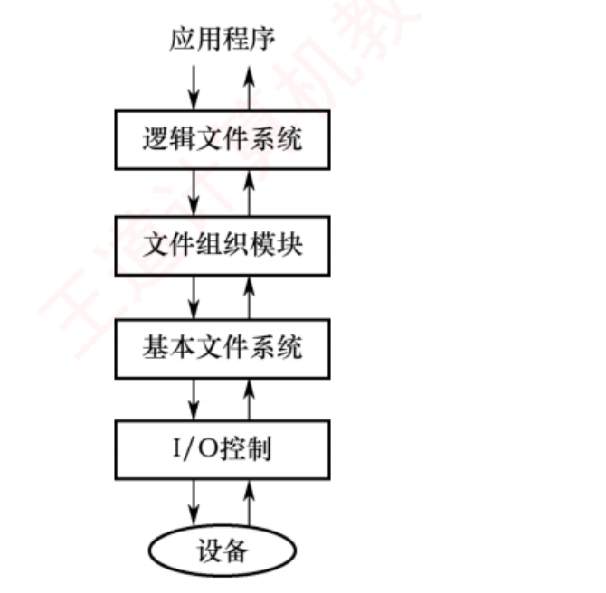
图 4.1 一个合理的文件系统层次结构（p.253）——从上往下看，每一层做的事就是「把一个名字换成一个更靠近硬件的地址」 ：应用程序给的是文件名 ，逻辑文件系统换成逻辑块号 ，文件组织模块换成物理块号 ，基本文件系统换成磁盘地址 ，I/O 控制换成硬件指令 。注意箭头是双向的 ——数据要原路返回。
必记 · 四层的职责（自底向上）
层 职责 I/O 控制 （最底）含设备驱动程序和中断处理程序 ，负责内存与磁盘之间传输数据；驱动程序把高层命令转换为底层硬件可识别的特定指令 基本文件系统 向驱动程序发送通用命令 以读写磁盘的物理块 （每个物理块由唯一的磁盘地址 标识）；管理内存缓冲区 文件组织模块 建立文件逻辑块与物理块之间的映射 （逻辑块按 0…N 顺序编号，与物理布局通常不一致）；还包含空闲空间管理器 逻辑文件系统 （最高）管理元数据 （文件名、目录项、权限、时间戳，不含实际数据内容 ）；维护目录结构 ；通过 FCB 记录文件属性与状态 ；负责实现文件保护机制
⭐ 记忆钩子：
文件名 → 逻辑文件系统；逻辑块 → 文件组织模块；物理块 → 基本文件系统；具体指令 → I/O 控制。 我的补讲 · 这四层里只有两处会被出成题
书上四层写得很平均 → 但命题人只会盯住「谁管什么」这一件事 → 两处最容易错：
问法 答案 为什么容易错 空闲空间管理器在哪一层 文件组织模块 直觉会往「基本文件系统」猜，因为它离盘更近；但空闲块管理要跟分配一起做，而分配就是逻辑块→物理块的映射 文件保护在哪一层 逻辑文件系统 直觉会往底层猜；但权限是元数据的一部分，元数据归最高层管
⟹ 一条通用判据：凡是跟「名字、权限、目录」有关的都在最高层；凡是跟「块、地址、缓冲区」有关的都在中下层。 知识串联 · 这张分层图 ＝ 组原的「多级存储」＋ 网络的「协议分层」是同一种手法
跨科枢纽 分层的意义永远是「每层只跟相邻层说话，换掉一层不影响别层」 ——
这正是 4.3.3 虚拟文件系统 存在的理由（换掉 ext4 换成 NTFS，上层程序一行不改），
也正是《计算机网络》分层模型和组原「用户程序 → 高级语言 → 汇编 → 机器语言 → 微指令」多级机器的同一句话。⟹ 读到 4.3.3 时回头看这张图：VFS 就是在「逻辑文件系统」这一层上面再切了一刀 ，
把「统一接口」和「各家实现」分开。先有分层，才谈得上虚拟 。
📄 p.253
4.1.3 文件的逻辑结构 ← 本节唯一会跨到 4.2 去考的东西
必记 · 逻辑结构 vs 物理结构（本章第一条分界线，全章通用）
逻辑结构 ＝从用户视角 所看到的文件组织形式，与底层存储介质无关 ，取决于用户的需求 。物理结构（存储结构） ＝文件在外存上的实际存储方式，对用户透明 ，取决于文件系统设计者针对硬件所采取的策略 。逻辑结构分两大类：无结构文件（流式文件）／有结构文件（记录式文件）。
我的补讲 · 「逻辑 vs 物理」这条线，用一句话就能永久分清
书上用「用户视角 / 实际存储」来分 → 潜台词是问「谁定的」比问「是什么」更好用 → 记这一句：
逻辑结构＝用户 说了算 · 物理结构＝文件系统 说了算
这句话直接解掉 4.1 选 03 那道题：「文件的逻辑结构是为了方便谁而设计的？」答案 D 用户 ——
因为「数据组织形式来自需求」。而物理结构的选择要看硬件 （书上举的例子极好：磁带介质很难实现链接结构和索引结构 ）。
⚠️ 反过来的坑更常见：「顺序文件」是逻辑结构，「连续分配」才是物理结构 ——
中文里两个词都能读成「一个挨一个」，但一个说的是记录、一个说的是盘块。看到「文件」二字多半是逻辑，看到「分配/盘块」多半是物理。 1．无结构文件（流式文件）
必记 · 三条特征
由连续的字符流 构成，长度以字节 为单位；通过读/写指针 定位下一个要操作的字节。源程序、可执行文件和库函数 均采用这种形式。缺乏显式的记录边界 ⟹ 若需检索特定内容，只能进行顺序查找 ，不适用于频繁随机访问或按记录检索。
2．有结构文件（记录式文件）
必记 · 定长记录 vs 变长记录
定长记录 ：所有记录长度相同，各数据项位置固定 ⟹ 可通过偏移量直接定位任意记录，支持高效随机访问 。变长记录 ：各记录长度不一 ⟹ 无法直接计算记录位置，检索时通常只能顺序查找 。
我的补讲 · 「定长就能随机访问」这半句，是本章所有索引结构的动机
书上把「定长 ⟹ 可算偏移」轻轻带过 → 潜台词是整章后面所有的「表」都是靠这一条才快起来的 ：
哪张表 为什么快 在哪一节 索引表 （逻辑结构）索引项定长 ⟹ 第 i 项的地址可算 4.1.3 索引文件 索引块 （物理结构）每个盘块号定长（如 4B）⟹ 第 i 块的盘块号可算 4.2.6 索引分配 FAT 每个表项定长 ⟹ 表项 k 的地址可算 4.2.6 显式链接 目录（用 inode 后） 目录项定长 16B ⟹ 每块能装多少项可算 4.2.2 页表 （ch3）页表项定长 ⟹ 第 P 项的地址可算 ch3 3.1.3
⟹ 一句总结：「变长 ⟹ 只能顺序找」和「定长 ⟹ 能算能跳」是本章所有加速手段的唯一发动机。
凡是遇到「怎么让它快起来」，答案永远是同一招：造一张定长的表，把变长的东西挂在表项里 。 （1）顺序文件
知识串联 · 「批量处理最优」这句话，在组原和 ch5 都会再见到
连到 OS ch5 书上说顺序文件「在批量处理场景下 I/O 效率在所有逻辑文件类型中最高」 ——
原因不在文件本身，而在磁盘的物理特性 ：磁盘的寻道时间远大于传输时间 ，
连续读一大片只寻道一次，而离散读 n 块要寻道 n 次。连到组原 ch3 这与「Cache 按块读取而不是按字读取」是同一条理由 ——
慢介质的启动开销 远大于单位传输开销 ，所以一次多搬一点总是划算。⟹ 这条判据会在 ch5 磁盘调度里反复用到：凡是能把随机访问变成顺序访问的优化，都是好优化。
4.2.6 里连续分配「寻道次数和寻道时间最小」、簇「缩短链式查找时间」，说的都是它。
必记 · 串结构 vs 顺序结构，以及顺序文件的两个「最」
① 串结构 ：记录按存入时间先后 排列，不按键字排序 ⟹ 检索必须从头顺序扫描。② 顺序结构 ：所有记录按键字有序 排列 ⟹ 定长且按键字有序时，可通过偏移量直接定位记录，并支持折半查找 。顺序文件在批量处理场景下 I/O 效率在所有逻辑文件类型中最高 。 对于顺序存储设备（如磁带），顺序文件是唯一 能够有效工作的组织形式。 单条记录的查找、修改、插入或删除 时性能明显不足。
陷阱 · 「顺序文件能不能折半查找」有前提，两个字都不能少
能折半的条件是「定长」且 「按键字有序」 ——缺一不可： 变长 + 有序 ：算不出第 i 条在哪，折半的「取中间那条」这一步就做不了 ⟹ 不能折半 ；定长 + 串结构（无序） ：能跳但没有序性，折半没有意义 ⟹ 不能折半 。⟹ 选项里只要出现「顺序文件可用折半查找」而不带前提，就要警惕；带了「定长且有序」才是对的。
（2）索引文件
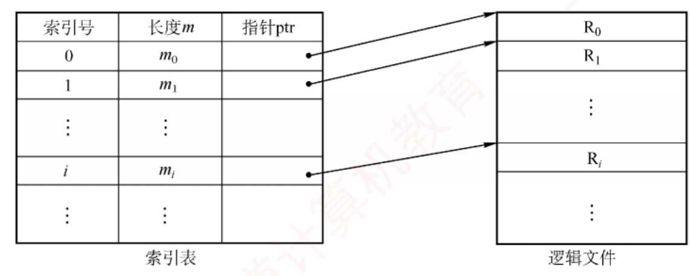
图 4.2 索引文件示意图（p.254）——左表三列「索引号 | 长度 m | 指针 ptr」是定长 的，右边的逻辑文件 R₀,R₁,…是变长 的 。整张图想说的只有一句：把「在变长堆里顺序找」换成「在定长表里跳着找」 。注意索引表里没有记录的数据，只有位置和长度 ——这正是 4.1 选 04 的 C 选项错在哪。
必记 · 索引文件的三条结论（4.1 选 04 一题打三个点）
① 每条记录对应一个 索引项 （不是多个）；② 索引项只包含记录的长度和起始位置（指针） ，不含数据 ； ③ 由此增加 了存储开销（不是减少）；对索引文件存取时，必须先查索引表 。 Ai = iL ；变长顺序文件 Ai = Σk=0..i−1 Lk + 1 （只能从头累加）。
（3）索引顺序文件
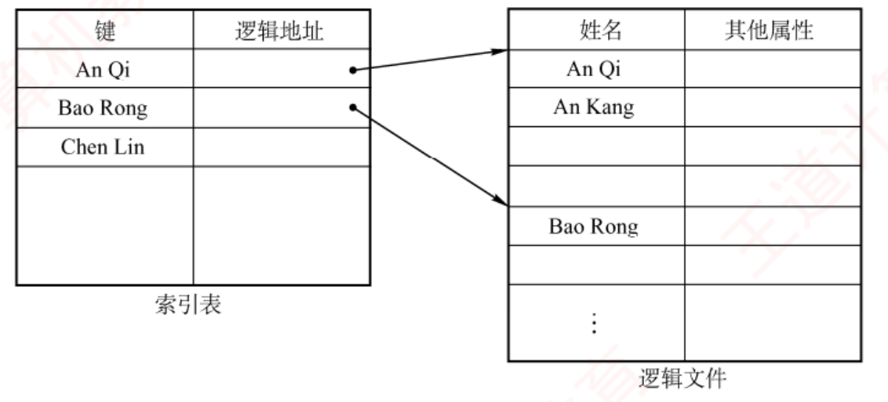
图 4.3 索引顺序文件示意图（p.255）——只为「每组的首条记录」建索引项 ，所以左边索引表只有 An Qi / Bao Rong / Chen Lin 三项，而右边逻辑文件里 An Qi 与 An Kang 挤在同一组。⭐ 组内可无序，组间必须按键字有序 ——这就是为什么 An Kang 排在 An Qi 后面也不算错。
必记 · 平均查找次数与 m = √N（本节唯一的公式）
普通顺序文件含 N 条记录 ⟹ 平均查找
N/2 次。
索引顺序文件均分为 m 组，每组 s = N/m 条 ⟹ ① 索引表顺序查找平均
m/2 次；② 组内平均
s/2 次。
总平均 = m/2 + s/2 = m/2 + (N/m)/2 ，当 m = √N 时最小，最小值 = √N
⭐ 引入两级或多级索引可进一步降低开销——
这正是分块查找（索引顺序查找）的基本思想 。
知识串联 · 这个 √N 与数构 ch7 的分块查找是同一个 √N
连到数构 ch7 数构里分块查找的结论是「块长取 √n 时平均查找长度最小，为 √n + 1」 ——
唯一的差别是数构那边算的是「比较次数」要 +1，OS 这边算的是「查找次数」忽略那个 +1。 ⚠️ 王道在 4.1 选 05 的解析里专门交代了这个口径（原话）：「严格来说，索引表查找和组内查找的准确平均次数都是 (1+100)/2 = 50.5，
不过在操作系统教材中往往直接忽略前面的 1，因此本类题中也不会同时出现 100 和 101 两个选项 。」 ⟹ 考场判断法：看选项。同时给 100 和 101 才需要纠结 ±1；只给一个就直接选它。
这个「看选项定口径」的技巧在数构与 OS 交叉处经常救命。
我的补讲 · 把 √N 推一遍，比背它管用（考场上 30 秒可复现）
书上直接给「m = √N 时最小」的结论 → 潜台词是它是个可推导的极值 → 会推就不会记反：
令 f(m) = m/2 + N/(2m)。由均值不等式 a + b ≥ 2√(ab) ：
m/2 + N/(2m) ≥ 2·√( (m/2)·(N/2m) ) = 2·√(N/4) = √N
取等条件是 m/2 = N/(2m)，即 m² = N，m = √N ，此时每组 s = N/m = √N ——组数与组内条数相等 。
⟹ 这条「组数 = 组内条数时最优」的直觉比公式更好用：分块查找、多级索引、甚至 4.2.2 的目录分块，都是让「查表的代价」和「查块的代价」拉平 。
凡是看到「怎样分组最快」，答案永远是「两边一样多」。 （4）直接文件（散列文件）
我的补讲 · 五种逻辑结构，用「怎么找到第 i 条记录」一句话各自收口
4.1.3 讲了五种逻辑结构，看着零碎 → 但它们只在一个问题上不同：给定要找的记录，怎么定位它 ：
逻辑结构 怎么找到目标记录 能随机访问吗 无结构（流式） 没有记录概念 ，只能按字节顺序扫❌ 顺序文件（定长 + 有序） 算偏移 Ai = iL ，或折半✅ 顺序文件（变长） 从头累加长度 ❌ 索引文件 先查定长索引表，拿指针直接跳 ✅ 索引顺序文件 先在索引表定组，组内顺序找 介于两者之间，O(√N) 直接（散列） 关键字算地址，一步到位 ✅ O(1) ，但有冲突
⟹ 一句总纲：「能不能随机访问，取决于地址能不能算 出来。」
定长能算、索引表能查着算、散列能直接算；变长和流式算不出来，就只能扫。
这句话在 4.2.6 讲物理结构时会原样再用一次 ——连续分配能算、FAT/索引能查着算、隐式链接算不出来。 必记 · 一句话
记录的物理地址由其关键字经散列函数计算直接确定 。支持极快的随机存取 ，但不同关键字可能映射到同一地址 ⟹ 冲突 。
知识串联 · 四种逻辑结构 ＝ 数构 ch7 的四种查找结构
连到数构 ch7 书上收口说「有结构文件的各类逻辑组织方式，
本质上都是围绕"如何高效查找数据"设计的 」——
把它们和数构一一对上，四个全是老熟人：
逻辑结构 数构里的对应物 查找代价 顺序文件（串结构） 无序顺序表 O(N) 顺序文件（顺序结构，定长） 有序顺序表 + 折半查找 O(log N) 索引顺序文件 分块查找（索引顺序查找） O(√N) 直接文件（散列） 散列表 O(1)，但有冲突
⟹ 你在数构 ch7 做过 136 道查找题。这一小节不需要重学，只需要把"记录"读成"关键字"、把"文件"读成"表" 。
连缺点都照搬：散列快但不支持范围查询、分块索引查得快但插删要维护索引表。 📄 p.255
4.1.4 本节小结 —— 开头两问的答案
必记 · 两问的标准答法
1）什么是文件？ 文件是 OS 中用于存储和组织数据的基本单位，是一组逻辑上相关的信息的有序集合 ，通常以一个名字标识，并保存在持久性存储设备 上。2）文件系统在 OS 中的地位如何？ 文件系统是 OS 的核心子系统之一 。向上 为应用程序提供简洁一致的抽象接口、屏蔽底层存储细节 ；向下 与设备驱动协同、高效调度物理存储资源。是连接用户逻辑视图与物理存储之间的桥梁 ，起承上启下 的作用。
背景 · 「图书馆管理图书」的类比（书上明说"不完全等同于实际机制"，看一眼即可）
书的内容 ↔ 文件的数据；分库编号录入查阅系统 ↔ 文件的分类与查找机制；绝版书仅限高权限读者借阅 ↔ 文件的访问权限控制。
书上补了一句「OS 对文件并无严格统一的定义 」——所以不要去背"文件的精确定义"，考的是分类和属性，不是定义本身 。
📄 p.257
4.2 目录与文件 ← 全章重心：37 页 · 28 道真题 · 6 道综合真题（≈ 90 分）
我的补讲 · 本节 15 页正文里，有 12 处王道自己标了「考点追踪」
王道在正文里散落着 19 处考点追踪（＝他们统计的真题落点）。我把它们按小节归了个类，结论非常刺眼：
小节 考点追踪处数 年份 4.2.2 FCB 与 inode 3 2009 · 2018 · 2020 · 2022 4.2.3 目录结构 1 2010 4.2.6 文件的物理结构 7 2009–2025 几乎每年 4.2.7 文件的操作 5 2012–2025 几乎每年 4.2.9 文件保护 1 2017
⟹ 4.2.6 与 4.2.7 合计 12/19，是本节的双重心 。而 4.2.1/4.2.4/4.2.5（目录概念、目录操作、目录实现）三小节加起来一处考点追踪都没有 ——
它们要读，但可以读得快。下面我把这三节压成了短块，把省下的篇幅全部灌进 4.2.6 和 4.2.7。 4.2.1 目录的基本概念
知识串联 · 「按名存取」这四个字，是 408 里"命名与绑定"这条线的一环
跨科枢纽 · 名字 → 地址的翻译 整个 408 都在做同一件事：把一个人类可读的名字，翻译成一个机器可用的地址。
科目 名字 翻译成 靠什么表 OS ch3 逻辑地址 物理地址 页表 / 段表 OS ch4（本节） 文件名 / 路径名 inode 号 → 盘块号 目录 + inode OS ch5 逻辑设备名 物理设备 逻辑设备表 LUT 网络 域名 IP 地址 → MAC 地址 DNS / ARP 组原 ch4 符号地址（标号） 机器地址 汇编器的符号表
⟹ 五处的套路完全一样：「查一张表，把名字换成编号；编号不够近，就再查一张表。」
也因此五处都有同一个优化：缓存翻译结果 （TLB / 目录项缓存 / DNS 缓存）。 必记 · 目录管理的四项要求（小结第 1 问的答案）
文件目录是一种数据结构 ，记录每个文件的属性、存储位置等元数据。四项要求：① 实现按名存取 ——用户仅需提供文件名即可定位（最基本的功能 ）；② 提高检索速度 ；
③ 支持文件共享 （目录需提供访问控制信息）；④ 允许文件重名 。
我的补讲 · 这四项要求，正好是 4.2.3 四种目录结构的「进化史」
书上把四项要求和四种目录结构分开讲 → 潜台词是每种结构解决其中一项 → 串起来读，四种结构就不用背了：
目录结构 新解决了哪一项 还差什么 单级目录 ① 按名存取 不允许重名 、查得慢、不能共享两级目录（MFD + UFD） ④ 允许不同用户重名 + ② 提速UFD 是扁平的，不能分类 树形目录 分类管理 + 各节点独立权限 难以共享 （一个文件只能挂一处）无环图目录 ③ 支持共享 删除变复杂 ⟹ 要维护共享计数器
⟹ 记住这条进化链，四种结构的优缺点一个都不用背：每一代都是为了补上一代缺的那一项，同时带出一个新代价 。 📄 p.257
4.2.2 文件控制块和索引节点 ← 本节第一个计算点
我的补讲 · 本小节两页，装着本章的第一个计算模型，先看这条链
4.2.2 表面上讲两个数据结构，实际上给出了本章"查找一个文件要访盘几次"的完整计算链 ：
环 公式 输入从哪来 ① 每块能装几个目录项 盘块大小 ÷ 目录项大小 题干给 ② 该目录占几块 ⌈目录项总数 ÷ ①⌉ ①＋文件数 ③ 在该目录里查一个文件平均访盘几次 ② ÷ 2 ② ④ 沿路径查 k 级目录共几次 Σ 各级的 ③ （用了 inode 的还要各 +1 读 inode）③＋路径深度
⟹ 这条链在综合真题里被完整用过（教材综 06 的「5 次读盘」就是第 ④ 环）。
本章 6 道综合真题里，有 3 道的第一问就是走这条链 。
⚠️ 第 ② 环的向上取整、第 ④ 环的"每级都要单独算"，是这条链上最常掉的两个环。 考点追踪 · 文件属性信息的存储位置（2009）
我的补讲 · 2009 年那道题的完整推理链（一句话考三层）
题问「文件的属性信息存放在哪里」 → 要答对必须走完三步，缺一步就会掉进干扰项：
步 结论 排除掉的错答 ① 属性与内容是分开存的（4.1.1） ❌「存在文件的数据块里」 ② 属性存在 FCB 里，而所有 FCB 的集合＝目录 ❌「存在一张全局的属性表里」 ③ 用了 inode 后，目录项只剩「文件名 + inode 号」，属性都搬进了 inode ❌「存在目录项里」——这是 UNIX 下最常见的错答
⚠️ 所以这道题的答案会随「有没有 inode」而变：传统 FCB 体系 ⟹ 属性在目录（FCB）里；UNIX inode 体系 ⟹ 属性在 inode 里，目录里只有名字和号 。
读题时先看它说的是哪一种体系 。2020 与 2025 两道题（目录项里有没有权限）考的正是后者。 考点追踪 · 目录项结构的相关分析与计算（2020、2022）
知识串联 · 目录项瘦身之后，目录检索就变成了数构的「分块 + 顺序查找」
连到数构 ch7 「640 个目录项占 10 块、平均查 5 次」这个算式，本质上是分块查找里"只查块、块内顺序扫" 的磁盘版：
数构分块查找 本节目录检索 代价单位 块内顺序比较 盘块读进内存后，在内存里逐个比文件名 几乎不计 （内存操作）块间顺序查找 逐块从磁盘读入 一次访盘，代价极高
⭐ 差别就在这里：数构里两种比较代价相同，所以要用 √N 分组求平衡；本节里访盘远贵于内存比较，所以只需让块数尽量少
——这正是"把目录项从 64B 砍到 16B"的全部意义 ，而不是去调整"分几组"。
⟹ 一句一般化：「代价模型变了，最优策略就变了。」 同一个查找问题，在内存里和在磁盘上答案不同——
这也是 ch5 磁盘调度算法与 ch2 进程调度算法结论不同的根本原因。 考点追踪 · 索引节点与文件容量的关系（2018、2020）
我的补讲 · 「一个文件系统最多能有多少个文件」——2020 年考的就是这个，答案出人意料
目录项 = 「文件名 + inode 号」 → 潜台词是文件数量的天花板由 inode 号的位数决定 → 于是能考一道很反直觉的题：
文件数上限 = 2inode 号位数 ⟸ 与文件名长度、字符集、盘容量全都无关
干扰项 为什么不影响文件数上限 「文件名最长 14 字节 ⟹ 文件数受名字组合数限制」 同名可以在不同目录下 ，名字不构成全局约束「盘块 4KB ⟹ 文件数受盘块数限制」 那是容量 的限制，不是数量 的限制；空文件也占一个 inode 「目录项 16B ⟹ 每块 64 个 ⟹ 文件数是 64 的倍数」 目录可以占任意多块，不构成上限
⟹ 记法：「能编号多少个，就最多有多少个。」
同一句话在 ch3 是「页表项位数决定能表示多少个页框」、在组原是「地址位数决定寻址空间」。 1．文件控制块 FCB
知识串联 · FCB 之于文件，正如 PCB 之于进程——连三类信息都对得上
承 ch2 2.1 两个「控制块」是 408 里最工整的一对类比：
FCB（本节） PCB（ch2） 同在哪 基本信息 ：文件名、物理位置、逻辑/物理结构进程标识符 PID、程序和数据的地址 「我是谁、我在哪」 存取控制信息 ：各类用户的访问权限处理机状态、进程优先级 「我能做什么」 使用信息 ：创建时间、最后修改时间进程控制信息、资源清单 「我用过什么」 所有 FCB 的集合 = 目录 所有 PCB 的集合 = 进程表 控制块集合就是那个"表"
⟹ 由此还能顺出一条对照：「创建文件 ⟹ 建 FCB」与「创建进程 ⟹ 建 PCB」是同一句话 ；
「撤销进程要回收 PCB」与「删除文件要回收 inode」也是同一句话 。
两章的"生命周期"题可以合并复习。 必记 · FCB 是什么 + 三类信息
FCB（File Control Block） ＝存放控制文件所需各种信息的数据结构，以实现按名存取。
⭐
每个文件对应一个 FCB；所有 FCB 的集合构成文件目录（也称目录文件） 。 每当创建新文件，系统即为其建立一个 FCB。
三类信息：
类别 内容 基本信息 文件名、物理位置、逻辑结构、物理结构 存取控制信息 文件主、核准用户和一般用户的访问权限 使用信息 文件创建时间、最后修改时间等
典型 FCB 的字段（图 4.4，表格重排不裁图）： 文件名 ｜ 类型 ｜ 文件权限（读，写）｜ 文件大小 ｜ 文件数据块指针。
我的补讲 · 「目录文件」这三个字是本章最绕的一个词，一次绕清楚
书上一句「所有 FCB 的集合构成文件目录（也称目录文件）」 → 潜台词是目录本身也是一个文件，它存在盘块里 → 于是能考出一串题：
推论 由此能考什么 目录要占盘块 「一个目录占几个盘块」＝ 目录项数 ÷ 每块目录项数（向上取整 ） 查目录要读盘 「查找一个文件平均读几次盘」＝ 目录占的块数 ÷ 2（顺序查找平均查一半） 目录也有自己的 FCB / inode 逐级查找路径时，每一级目录都要先读它的 inode 再读它的数据块 （2018/2022 综合真题的关键） 目录能被"打开"「读」 ls 的本质就是读一个目录文件的内容
⚠️ 最容易漏的一步：算「查找 /a/b/c 要读几次盘」时，每一级目录如果占了 2 个盘块，就可能要读 2 次 ——
这正是 4.2 综 06「找到文件 A 需要 5 次读盘」而不是 4 次的原因（见下方专块）。 2．索引节点 inode
必记 · 为什么要把文件名和描述信息分开
问题 ：查找过程中系统需逐块读入目录项，并逐一比对文件名；而仅当匹配成功时才需要获取该文件的物理地址
⟹ 检索阶段除文件名外的其他描述信息并无必要调入内存 。文件名与描述信息分离 ：描述信息独立组织为索引节点（inode） ；
目录项仅由「文件名 + 索引节点号（或指针）」构成 （图 4.5，两列表：文件名 ｜ 索引节点编号）。
知识串联 · 目录项瘦身（64B → 16B）＝ 组原的「块大小换标记位」＝ ch3 的「页表项对齐」
连到组原 ch3 为什么把目录项从 64B 砍到 16B 就能提速 4 倍？因为访盘次数正比于目录占的块数，块数正比于目录项大小 。
这与组原里「Cache 块越大，同样容量下块数越少、标记位越少」是同一套除法。连到 ch3 而 16B = 14B 文件名 + 2B inode 号 这个切分，与 ch3 里「页表项取 4B 是为了对齐 + 预留标志位」也是同一种考量 ——
让"一块能整装 k 项"且 k 是 2 的幂，除法就变成移位 （1KB/16B = 64，正好 2⁶）。⟹ 由此可以自问一句好题：为什么不把目录项做成 10B？
答：1024/10 除不尽，块尾会剩 4B 碎片，且用下标算地址要做真除法 ——与「页面大小必须取 2 的幂」是同一个理由 。
必记 · 书上的标准算例（🐍 已复算，必背套路）
传统 FCB 目录 UNIX inode 目录 每个目录项大小 64B 16B （14B 文件名 + 2B 索引节点号）盘块 1KB 能装几项 1KB/64B = 16 1KB/16B = 64 640 个目录项占几块 640/16 = 40 块 640/64 = 10 块 平均启动磁盘几次 40/2 = 20 次 10/2 = 5 次
⭐
平均磁盘启动次数降至原来的 1/4。 ⚠️ 原文明确：
FCB 必须连续存放 。
⭐ 提炼公式：
每块目录项数 = 盘块大小 ÷ 目录项大小；总块数 = 目录项总数 ÷ 每块目录项数（向上取整）；平均查找启动次数 = 总块数 ÷ 2 。
我的补讲 · 这个「1/4」不是巧合，它就是 64/16，题目换个数字照样算
书上给出「降至 1/4」的结论 → 潜台词是加速比 = 目录项大小之比 → 所以这类题可以口算：
加速比 = 旧目录项大小 ÷ 新目录项大小 （因为块数与目录项大小成正比，平均次数又与块数成正比）
验证：64B → 16B，比值 4，与书上「1/4」一致。若题目改成 FCB 128B、目录项 32B，加速比同样是 4。
⚠️ 但有一个前提必须成立：「目录项总数不变」 。如果题目同时改了文件数，就得老老实实按三步公式算。
⚠️ 还有一个高频坑：「总块数 = 目录项总数 ÷ 每块目录项数」这一步要向上取整 ——
641 个目录项 ÷ 64 = 10.02 ⟹ 11 块 不是 10 块。而下一步的「÷2」不取整 ，平均值可以是小数。 必记 · 磁盘 inode 与内存 inode（考的就是「谁多了什么」）
磁盘索引节点 （存于磁盘，每个文件有唯一磁盘索引节点 ）：文件主标识符 · 文件类型 · 文件存取权限 · 文件物理地址 （⭐ 通过 13 个地址项 以直接或间接方式记录数据所在盘块编号）·
文件长度 · 文件链接计数 （⭐ 统计指向该文件的目录项（硬链接）数量 ）· 文件存取时间 。内存索引节点 （文件被打开时载入内存）＝ 磁盘 inode 额外新增 ：索引节点号 · 状态 （是否上锁或已修改）· 访问计数 （进程每访问一次加 1）· 逻辑设备号 · 链接指针 （指向空闲链表与散列队列）。
陷阱 · 「内存 inode 有而磁盘 inode 没有」的那一项（4.2 选 01 直接考）
答案是 访问计数值 。 四个选项里另外三个——文件物理地址、文件长度、文件类型 ——磁盘 inode 里全都有 。判据一句话：凡是"只有运行起来才有意义"的字段，磁盘上就不存 ——
访问计数、上锁状态、指向内存链表的指针，关机后都无意义，自然不写回盘。⟹ 同一条判据在 ch2 的 PCB、ch3 的页表项上都用过：「静态属性存介质，动态状态存内存」 。
知识串联 · inode 的「访问计数」＝ 打开计数 ＝ 硬链接 count ＝ 共享计数器，四处同一个思想
本章内部三处呼应 本章一共出现了
四个计数器 ，考试极爱把它们混着问：
计数器 数的是什么 在哪 归零时发生什么 硬链接计数 count 指向它的目录项个数 磁盘 inode 才真正删除文件和 inode 打开计数 Open Count 打开它的进程数 系统打开文件表 删除系统表项，释放内存资源（不删文件 ） 内存 inode 的访问计数 进程访问次数 内存 inode 该内存 inode 可释放 无环图目录的共享计数器 共享链数 共享节点 才真正删除该节点
连到 ch3 同一个思想在 ch3 也出现过：共享内存段的引用计数、写时复制的页面引用计数。
⟹ 一句总结：「只要还有人指着它，就不能删」——这是整个 408 里最通用的一条资源回收规则 。
⚠️ 但要分清「谁指着它」：硬链接数的是目录项（在盘上），打开计数数的是进程（在内存里） ，这正是 2023 年那道「关闭文件会不会写回磁盘」的答题依据。 📄 p.258
4.2.3 目录结构
我的补讲 · 四种目录结构，考试只在三个点上出题
本小节 3 页讲四种结构，但真题只在这三处落地（王道自己只标了 2010 一处考点追踪，说明它不是重灾区）：
出题点 标准答案 常见错答 ① 哪种结构解决了重名 两级目录起 （靠命名空间隔离）误答"树形目录"——树形是再往上 解决分类的 ② 树形目录的缺点 查找要逐级访问中间目录 ⟹ 磁盘 I/O 次数增加 误答"不能共享"——不能共享是它相对无环图的缺点 ，但书上列的局限是 I/O ③ 当前工作目录的作用 （2010）减少访盘次数、加快检索 误答"方便用户""节省空间"
⟹ 三个点都围绕同一个量：访盘次数 。这不是巧合——本章从头到尾，衡量目录好坏的唯一硬指标就是它。
读到 4.2.2 的「平均启动磁盘 20 次 → 5 次」、4.2.5 的「把活跃目录缓存到内存」，问的都是这一个数。 考点追踪 · 设置当前工作目录的作用（2010）
知识串联 · 绝对路径 vs 相对路径 ＝ 组原的绝对寻址 vs 相对寻址，一字不差
连到组原 ch4 4.2 「从根开始数」和「从当前位置开始数」这对概念，在组原叫另一个名字：
本节 组原 ch4 寻址方式 共同的好处 绝对路径 （从 / 起）直接寻址 （形式地址即有效地址）唯一、不依赖上下文 相对路径 （从当前目录起）相对寻址 EA = (PC) + A 短、可移动 ——整棵子树搬走后相对路径依然有效当前工作目录 PC / 基址寄存器 都是"当前位置"这个隐含操作数
⟹ 连"为什么要有它"的答案都一样：省长度、省时间、支持位置无关 。
组原里相对寻址让程序可浮动装入，本节里相对路径让目录树可整体迁移（4.2.4「移动目录后文件内容不变」）。
⚠️ 也共享同一个风险：依赖"当前位置" ——当前目录变了，同一个相对路径就指向别处；
这与组原里"PC 变了相对寻址结果就变"是同一件事 。 *1．单级目录结构
知识串联 · 从单级目录到树形目录，走的是和「一级页表 → 多级页表」完全相同的一条路
承 ch3 3.1.3 两条演进线的动机、手段、代价三项全部对应：
目录结构（本节） 页表结构（ch3） 起点 单级目录：一张大表装全部文件 一级页表：一张大表装全部页 问题 表太大 ⟹ 查得慢、不能重名 表太大 ⟹ 占内存、必须连续存放 手段 分层（MFD → UFD → 子目录） 分层（页目录 → 页表） 代价 查找要逐级访问 ⟹ 访盘次数增加 地址转换要逐级访存 ⟹ 访存次数增加 补救 当前工作目录 + 目录项缓存 TLB（快表）
⟹ 五行一一对应，连补救手段都是同一招（缓存最近用过的那一段 ）。
这是 ch3 与 ch4 之间最完整的一处同构，值得单独记一遍 ——记住了，两章的"为什么要分层"就都不用再想。 背景 · 单级目录（图 4.6 太简单，不裁图；知道它的三条缺点即可）
整个文件系统仅维护一张全局目录表 ，每个文件对应一个目录项（FCB₁ | FCB₂ | … | FCBₙ，每个下挂一个文件）。遍历整张目录表 确保无同名；访问/删除都按文件名定位 FCB。查找效率低、不允许文件重名、难以支持文件共享 ⟹ 仅适用于早期单用户的简单文件系统 。
*2．两级目录结构
我的补讲 · 两级目录「解决重名」是怎么做到的——答案是命名空间，不是查重
书上说两级目录「解决了不同用户间文件重名的问题」 → 潜台词不是"系统变聪明了"，而是「同名」的定义变了 → 一句话：
单级目录：文件的全名 = 文件名 ⟹ 两个 A 就是重名全名 = 用户名 + 文件名 ⟹ User₁/A 与 User₂/A 根本不是同一个名字
⟹ 树形目录把这条推到极致：全名 = 完整路径 ，所以 /home/a/x 与 /tmp/a/x 天然不冲突。
「同一目录中文件名必须唯一」这条 4.1.1 的规则，从头到尾都没变过——变的只是"目录"的层数。
⚠️ 由此可判一道判断题：「树形目录允许整个系统中出现同名文件」——对；「允许同一目录下出现同名文件」——错。
两句只差四个字，是本节最典型的一对干扰项。
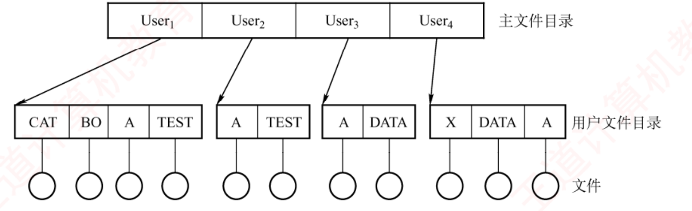
图 4.7 两级目录结构（p.259）——看 User₁ 和 User₂ 下面都有一个叫 A 的文件、都有一个叫 TEST 的文件 ，这就是「允许重名」四个字的图像。MFD 的每个目录项记的不是文件，而是「用户名 + 该用户 UFD 的存储位置」 ；真正的 FCB 全在 UFD 里。注意最下排的圆圈才是文件本体。
必记 · 两级目录的得与失
MFD（主文件目录） 的每个目录项记录一个用户名及其对应的 UFD 存储位置 ；每个 UFD 包含该用户所有文件的 FCB 。解决了不同用户间文件重名的问题 ，通过隔离用户命名空间增强了安全性 ，提升检索效率，支持基于目录的访问控制。每个用户仅拥有一个扁平的 UFD ⟹ 无法对文件进行分类管理。
3．树形目录结构
我的补讲 · 综合题里画目录树的三条硬规矩（本章 6 道综合真题有 3 道要画）
4.2 的综合真题（2011/2016 及教材综 03/04/05）都要读或画目录树。阅卷看的是这三件事 ：
规矩 怎么做 不这么做会怎样 ① 目录用方框、文件用圆圈 照图 4.8 的画法 分不清哪个节点还能往下挂，数访盘次数时必错 ② 每个目录旁标"它占几个盘块" 目录项数 ÷ 每块目录项数，向上取整 漏掉"一级目录占 2 块要读 2 次" （综 06 的 5 次 vs 4 次之争）③ 路径上每一级都要算「读目录项 + 读 inode」两笔 除非题目说 inode 已在内存 次数系统性偏小
⭐ 综 06「根目录找到文件 A 需要 5 次读盘」的完整数法（书上只给结论，这里补全）：root 的第 2 块（1 次）+ usr 那一级两块都要读（2 次）+ he（1 次）+ dir1（1 次）＝ 5 次 。玄机在 usr 那一级有 6 个目录项占 2 块、he 是第 6 项，必须读满 2 块 ——不写这一步只会数出 4 次。
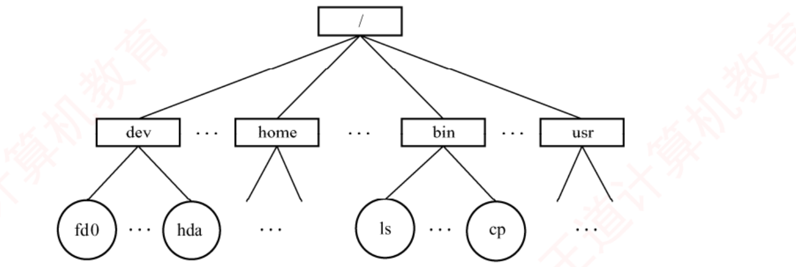
图 4.8 树形目录结构（p.259）——方框是目录、圆圈是文件 ，这个区分在做综合题画目录树时必须保持。从根 / 到任一节点的那条路就是绝对路径 （如 /dev/hda）；路径有多长，查找就要读多少级目录 ——这正是树形结构「便于分类但增加磁盘 I/O」的代价所在。
必记 · 路径名 · 绝对路径 · 当前目录 · 相对路径
路径名 ＝从根目录出发到目标文件路径上所有目录名和文件名，用分隔符 "/" 连接 而成。绝对路径 ：从根目录开始 ⟹ 系统中每个文件都具有唯一的绝对路径 。当前目录（工作目录） ：系统为每个进程 设置一个，进程对文件的访问通常以它为基准。相对路径 ：从当前目录出发。符号 "." 表示当前工作目录 （当前目录为 /bin 时，./ls 即相对路径）。Linux 的 /etc/passwd 记录了各用户登录时的默认当前目录，cd 命令通过系统调用动态更新当前目录。 局限 ：查找一个文件需按路径名逐级访问中间目录节点 ⟹ 磁盘 I/O 次数增加 。
我的补讲 · 2010 年考的「设置当前工作目录的作用」，答案只有一个词
书上把当前目录讲成一个便利功能 → 但真题问的是它到底省了什么 → 答案是减少磁盘 I/O 次数（加快文件检索速度） ，不是"方便用户少打字"。
推理链：绝对路径要从根逐级读目录 ⟹ 每读一级至少一次访盘 ⟹ 从当前目录出发省掉了前面若干级 ⟹ 省的是访盘次数 。
干扰项 为什么错 「加快文件的读写速度」 找到之后的读写快慢与目录无关 ，当前目录只影响查找 阶段「节省外存空间」 目录项一个不少，不省空间 「实现文件共享」 共享靠链接（4.2.8），与当前目录无关
⟹ 通用套路：凡是问某个机制"有什么作用"，先问它省掉了哪一步操作 ——省的那一步就是答案。 *4．无环图目录结构
我的补讲 · 无环图目录 vs 硬链接：两节讲的是同一件事的两个阶段
4.2.3 讲无环图目录、4.2.8 讲硬链接，很多人读成两个知识点 → 其实是同一个机制的"粗糙版"和"正式版" ：
4.2.3 无环图目录 4.2.8 硬链接 共享靠什么 把盘块号复制到另一个目录项 两个目录项指向同一个 inode 计数器叫什么 共享计数器 链接计数 count 归零才删 ✅ ✅ 致命缺陷 ❌ 一方追加新盘块，另一方看不见 ✅ 元数据唯一，天然同步
⟹ 所以 4.2.8 开头那句「若某用户向文件追加数据并分配新盘块……无法实现真正的共享 」，
就是在给 4.2.3 打补丁。读到 4.2.8 时回头把这两节合并成一条线记 ：共享的正确做法是共享元数据，不是复制元数据。
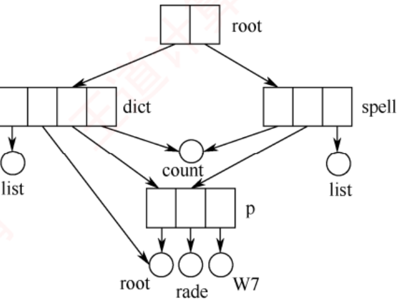
图 4.9 无环图目录结构（p.260）——关键就看 count 这个节点：dict 和 spell 两个目录都有边指向它 ，这就是「同一个文件出现在两个目录中」。树形结构里做不到这件事 （树的每个节点只有一个父亲）。⚠️ 注意 dict 还有一条长边直接指向最下面的 root 文件 ——共享的可以是文件也可以是子目录。
必记 · 共享带来的删除难题与共享计数器
在树形基础上引入指向同一节点的有向边 ⟹ 有向无环图 ，实现跨目录的共享 。共享带来删除操作的复杂性 ：直接物理删除会让其他共享用户访问失败。系统为每个共享节点维护一个共享计数器 ——新增共享链加 1，删除请求减 1；仅当计数器归零才真正删除该节点 ，否则只删除请求用户的共享链。
知识串联 · 四种目录结构 ＝ 数构的四种数据结构
连到数构 单级目录 = 线性表 ；两级目录 = 两层的树（深度固定为 2） ；
树形目录 = 树 ；无环图目录 = 有向无环图 DAG 。连查找代价都是照搬的：线性表 O(n) → 树 O(路径长度 × 每级目录内的查找) 。 连到 ch6 图 「无环」两个字不是修辞——有环就会导致引用计数永远不归零（循环引用），文件删不掉，
这正是数构 ch6 里「有向图判环」的实用场景，也是 Linux 不允许对目录建硬链接 的原因。 ⟹ 这条也直接回答了一个常见疑问：为什么软链接可以指向目录、硬链接不行？
因为软链接只是存了个路径字符串，不参与引用计数，成环也不会让 count 卡住。
📄 p.260
4.2.4 目录的操作 · *4.2.5 目录实现 ← 两节零考点追踪，压成一块读
我的补讲 · 「删除目录」的两种策略，正好对应两条真实命令
书上给的两种删除策略听着抽象 → 但它们就是 Linux 里两条你天天用的命令 → 对上号就再也不会混：
策略 对应命令 行为 ① 要求先手动清空 （子目录需递归）rmdir目录非空就报错 ，安全但麻烦② 允许直接删除非空目录 ，系统自动递归rm -r方便但危险 ——一条命令能删掉整棵子树
⟹ 顺带回答一个常被问的点：「若目录为空则可直接删除」这句话对两种策略都成立 ——
空目录没有递归问题，两种策略在这个边界上重合。
⚠️ 再叠一层：删除一个目录，等于删除它的目录项 + 回收它作为"目录文件"占用的盘块 + 回收它的 inode ——
目录本身也是文件，删它走的是完全一样的三步 。 背景 · 目录的 8 项操作（通读一遍，只有「删除目录」和「移动目录」两条有细节）
搜索 （支持精确匹配或部分文件名）· 创建文件 （先查重名）· 删除文件 （移除目录项 + 回收数据块与元数据）· 创建目录 ·
删除目录 （两种策略 ：① 要求用户先手动清空（子目录需递归）；② 允许直接删除非空目录，系统自动递归删除。若目录为空则可直接删除 ）·
移动目录 （原有目录项被转移，文件的完整路径名随之自动更新，而文件内容保持不变 ）·
显示目录 （属性变化时目录项同步更新）· 改变目录 （未显式指定时默认返回用户的主目录 ）。
我的补讲 · 「移动目录时文件内容不变」这句话，是硬链接原理的预告
书上说移动只改目录项、不动文件内容 → 潜台词是文件的身份不在它的路径里，而在它的 inode 里 → 这条在 4.2.8 会被明确写出来：
操作 动了什么 没动什么 移动/重命名 目录项（文件名、它在哪个目录里） inode、数据块、inode 号全不变 建硬链接 新增一个目录项 + count 加 1 inode 只有一个、数据块只有一份 建软链接 新建一个 LINK 类型文件（有自己的 inode ） 原文件完全不知情，count 不变
⟹ 由此可以直接回答一道常见判断题：「同一文件系统内移动文件很快，跨文件系统移动很慢」 ——对。
同一文件系统内只改目录项；跨文件系统必须真正复制数据再删除，因为 inode 号只在本文件系统内唯一 。 必记 · 目录实现的两种方法（小结第 2 问的答案）
① 线性列表 ：由文件名及其数据块指针 组成的线性表。标记为未使用 / 加入空闲链表 / 将末尾项移至空位并缩短目录长度 。查找效率低——目录规模越大，扫描开销越高 。文件名有序 可采用折半查找 ，但插入新文件时需要维护有序性，带来额外开销 。② 哈希表 ：根据文件名计算哈希值索引到表元素，元素存指向实际目录项的指针 。查找、插入和删除均具有很高的性能 ；⚠️ 需妥善处理哈希冲突 。系统通常将当前活跃的目录缓存到内存中 ，后续访问直接在内存进行，大幅减少磁盘操作。
知识串联 · 「把活跃目录缓存到内存」＝ TLB ＝ 快表 ＝ Cache ＝ ARP 缓存
跨科枢纽 · 空间换时间 这是 408 六大枢纽之一，本章是它的第五次出场：
科目 叫什么 缓存的是什么 组原 ch3 Cache 主存块 OS ch3 TLB（快表） 页表项 OS ch4（本节） 目录缓存 / VFS 目录项对象 目录内容、路径解析结果 OS ch4（4.2.7） 打开文件表 文件的磁盘位置与属性 网络 ARP 缓存 / DNS 缓存 地址映射
⚠️ 五处的代价也一模一样：一致性问题 ——缓存里的副本和原件可能不同步。
这正是 4.3.2 末尾那句「运行过程中持续维护内存副本与磁盘副本的一致性 」的来源，
也是 ch3 里 TLB 要在进程切换时刷新的原因。 📄 p.261
4.2.6 文件的物理结构 ⭐⭐ 全章第一重心：7 处考点追踪 · 本章计算题的唯一入口
我的补讲 · 本节 5 页，我把三种分配方式的"适用场景"补齐（书上散在各处）
书上逐个讲优缺点，但没有集中回答「什么时候该用哪个」。综合题的最后一问常问这个 ，一次补齐：
场景 该选 理由 只读光盘 / 一次写入不再改 连续分配 不需要动态增长，且顺序读最快 （CD-ROM 就是这么做的）小容量可移动介质（U 盘、软盘） FAT 盘小 ⟹ FAT 小 ⟹ 常驻内存的代价可以接受 ；实现简单、跨系统兼容大容量硬盘、通用文件系统 混合索引（UNIX inode） 开销跟着"打开的文件"走而不是"盘容量"走 顺序读写的大文件（日志、备份） 链接分配也够用 反正不随机访问
⟹ 选型判据一句话：「看两件事——文件会不会长大，访问是随机还是顺序。」
不长大 + 顺序 ⟹ 连续；会长大 + 顺序 ⟹ 链接；会长大 + 随机 ⟹ 索引。这句话能答本节所有"为什么现代系统用 X"的问答题。 考点追踪 · 不同物理结构的特点和比较（2009、2011、2013、2020）
我的补讲 · 「不同物理结构的比较」四年考过（2009/2011/2013/2020），题干只有五种问法
四道真题问法各异，但归纳下来只有五个维度。把这张表默出来，这四道题都是送分题 ：
维度 连续 隐式链接 显式链接 FAT 索引 支持随机（直接）访问吗 ✅ ❌ ✅ ✅ 有外部碎片吗 ✅ 有 ❌ ❌ ❌ 能动态增长吗 ❌ 难 ✅ ✅ ✅ 额外空间开销 无 每块一个指针 一张全盘 FAT（常驻内存） 每个文件一个索引块 访问第 n 块的访盘次数 1 n 1 （FAT 在内存）m + 1
⚠️ 这张表里最容易记反的一格是「隐式链接有没有外部碎片」 ：没有 ——
离散分配的全部意义就是消灭外部碎片。它的缺点在"访问慢"和"可靠性差"，不在碎片 。
⚠️ 第二容易错的是「索引分配有没有内部碎片」 ：有 ——最后一个数据块填不满，
但这是所有按块分配的方式共有的，不是索引分配特有的缺点 。索引分配特有的开销是索引块本身。 考点追踪 · 连续分配的应用和分析（2011、2012、2014）
知识串联 · 连续分配的三条缺点，逐条对得上 ch3 的动态分区分配
承 ch3 3.1.2 把「盘块」换成「内存单元」，连续分配就是 ch3 的动态分区分配，一字不改：
连续分配（本节） 动态分区分配（ch3） 易产生大量外部碎片 外部碎片 ，靠紧凑（拼接） 解决需预先知道文件长度，难以动态增长 分区大小在装入时定死，进程要长大就得搬家 删除/插入记录要物理移动 后续记录 紧凑时要移动整个进程 并修改重定位寄存器
⚠️ 但有一处关键差别，2011/2014 两道真题恰好卡在这里：磁盘上做"紧凑"的代价比内存高几个数量级
（内存搬 1MB 是毫秒级，磁盘搬 1GB 是分钟级）。所以内存里"紧凑"是常规手段，磁盘里"磁盘碎片整理"是罕见的维护操作 ——
这也是为什么现代文件系统宁可用索引分配，也不用连续分配。 考点追踪 · 链接分配的应用和分析（2014）
考点追踪 · 文件空间分配与簇的关系（2017、2018）
知识串联 · 「簇」＝ ch3 的「页面大小取舍」＝ 组原的「Cache 块大小取舍」，三处同一条曲线
跨科枢纽 · 粒度的两难 把分配单位放大，永远同时带来一好一坏，三科的说法一模一样：
科目 放大谁 好处 坏处 OS ch4（本节） 簇 （几个盘块合一）指针少、链短、I/O 快 内部碎片变大 OS ch3 页面 页表短 、缺页率降低页内碎片变大 组原 ch3 Cache 块 利用空间局部性 、标记位少 块过大时命中率反降 、替换代价高
⟹ 三处的最优点都不在两端，而在中间；三处的"坏处"都可以用同一个数估：平均浪费 = 单位大小 ÷ 2 。
⚠️ 只有组原那一行多了一条独有的坏处（块过大时命中率反而下降 ），因为 Cache 容量固定、块大则块数少。
磁盘没有这个问题（盘不会因为簇大而装不下） ——这是三者唯一的不对称处，别搬错。 考点追踪 · FAT 表的作用（2019、2025）
我的补讲 · FAT 的三个数：表项数、表项宽度、表的总大小，题目专挑你没算的那个问
FAT 类题目只给两三个数，要你补出第三个。三个量的关系是一条链 ：
磁盘容量 ÷ 盘块大小 = 总块数 = FAT 表项数 → ⌈log₂ 总块数⌉ = 表项最少位数 → 总块数 × 表项字节数 = FAT 大小
题目问 从链上的哪一环取 坑 「FAT 有多少个表项」 总块数 是总 块数，不是某个文件占的块数 「每个表项至少几位」 ⌈log₂ 总块数⌉ 别忘了 −1/−2 这些特殊值也要占编码空间 （严格说要 log₂(总块数 + 特殊值数)，但题目一般忽略）「FAT 占多少内存」 总块数 × 表项字节数 位要换算成字节并向上对齐 （如 28 位 ⟹ 实际用 4B）
⚠️ FAT16 / FAT32 这两个名字里的数字，指的就是表项位数 ——
FAT16 ⟹ 最多 2¹⁶ 个簇 ，这正是老 FAT16 分区不能超过 2GB（簇 32KB × 2¹⁶）的原因。
这个背景不必背，但它能让你一眼看出「表项位数决定盘的可管理容量」这条因果。 考点追踪 · 索引分配的应用和分析（2012）
我的补讲 · 「存一个 X 大的文件共占多少盘块」——本章最容易漏项的一类题
2012 年那道题以及教材综 09，问的都不是容量而是占用量 。三项都要算全：
项 怎么算 容易漏的 ① 数据块 ⌈文件大小 ÷ 盘块大小⌉ 一般不会漏 ② 一次间址块 若用到一次间址，+1 有时漏 ③ 二次间址的主索引块 + 下级索引块 1 + ⌈剩余块数 ÷ K⌉ ⭐ 那个"+1"最常漏
🐍 教材综 09(2) 的精确算法（书上写了个「≈512」，容易被误读成 511）：
文件占 524288 个数据块，前 10 块走直接、接下来 1024 块走一次间址1（主索引块）+ ⌈523254/1024⌉ = 1 + 511 = 512 个索引块
⟹ 那个多出来的 1 就是二级索引的主索引块 。答 511 的人，全都是把主索引块忘了。 考点追踪 · 混合索引分配的原理（2013）· 相关计算（2010、2015、2018、2022）· 多级索引块的访问效率分析（2018、2022）
我的补讲 · 2018 的「32KB 变体」——同一套公式换了 K，四步解法照走
2018 那道真题把盘块大小换成了别的数，很多人以为是新题型。其实只是 K 变了 ，四步一步不改：
题目条件 K = 盘块 ÷ 盘块号 直接段容量 一次间址容量 书上标准例：盘块 4KB、盘块号 4B 1024 10 × 4KB = 40KB 1024 × 4KB = 4MB 2018 变体：盘块 1KB、盘块号 4B 256 10 × 1KB = 10KB 256 × 1KB = 256KB 常见变体：盘块 512B、盘块号 2B 256 10 × 512B = 5KB 256 × 512B = 128KB
⚠️ 变体题唯一多出来的坑：直接地址项的个数也可能不是 10 （题目会给，如"12 个直接地址项"）。
动笔前先把三个参数各圈一遍：直接项个数、盘块大小、盘块号字节数。 三个都对，公式就自动对。
⟹ 一句话：「混合索引的题从来不换套路，只换三个数字。」 把四步解法写熟，这四年真题都是送分。 必记 · 物理结构的两个互补视角（这一句决定了 4.2.6 与 4.3.2 的分工）
① 文件分配方式 ——如何为文件分配已使用 的磁盘块，属于对非空闲块 的管理 ⟹ 本节 ；② 文件存储空间管理 ——如何跟踪和分配空闲 磁盘块，属于对空闲块 的管理 ⟹ 4.3 节 。必须与文件的逻辑结构区分开 。书上的类比：数据结构中「线性表」（逻辑结构）与「顺序表/链表」（物理实现） 的关系——
逻辑结构描述"是什么"，物理结构则说明"如何存" 。磁盘块 ，其大小通常与内存页面一致 ；所有磁盘 I/O 均以块为单位 。
我的补讲 · 先把三种分配方式的「一句话画像」记住，后面全是细节
三种分配方式在书上分了 5 页讲 → 但它们的区别只在「文件的第 i 块在哪里」这个问题怎么回答 ：
连续分配 用算的 ：目录里记 start 和 length，第 i 块 = start + i 。访盘 1 次 。必须连续 ⟹ 外部碎片 + 不能长大 。
链接分配 用跟的 ：目录里记首块，顺着指针一块一块走。隐式：访盘 n 次 （指针在盘块里）。显式（FAT）：指针全在内存 ⟹ 访盘 1 次 。
索引分配 用查的 ：目录里记索引块号，索引块的第 i 项就是答案。m 级索引访盘 m+1 次 。索引块本身占空间 。
⟹ 一句总结：算 < 查 < 跟 。三者的全部优缺点都是从这三个动词推出来的：
「算」最快但要求连续；「跟」最省事但只能顺着走；「查」是折中，代价是多存一张表。
⚠️ 这也解释了为什么 FAT 是链接分配却能直接访问 ：它把「跟」这个动作从磁盘搬到了内存 ——
动作没变，介质变了，于是代价从「n 次访盘」降成「n 次访存」，而访存在题目里通常忽略不计。 1．连续分配
我的补讲 · 「连续分配是唯一同时高效支持顺序与直接访问的方式」——这句话的三个坑
书上这句原话很绝对，但每一个限定词都在防一个错答：
限定词 防的是 「同时」 索引分配也支持直接访问，但顺序读时块是离散的，寻道多 「高效」 FAT 也能直接访问，但要先在内存里跳 i 次表项 ；连续分配是一次加法 「无需额外结构」 索引要索引块、FAT 要整张表；连续分配只要 start 和 length 两个数
⟹ 所以正确的表述是：「连续分配的访问性能 是最优的，代价全在空间管理 上。」
它不是被性能淘汰的，是被"外部碎片 + 不能长大"淘汰的 ——这一点与 ch3 里连续分配内存被淘汰的理由完全一致。
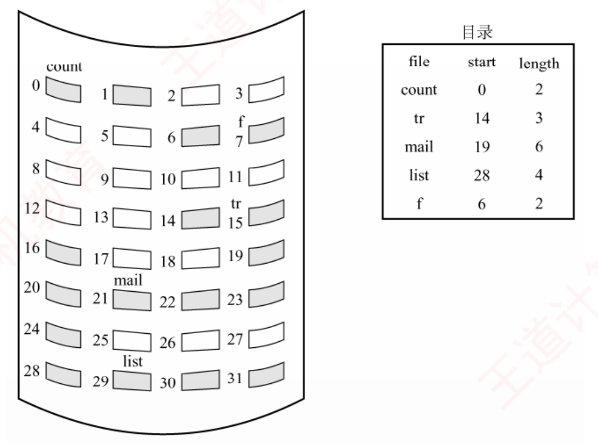
图 4.10 连续分配（p.262）——右边目录表的三列「file | start | length」就是连续分配的全部元数据 ，只要这两个数就能算出任意一块。左边磁盘里灰块是已用：count 占 0–1、f 占 6–7、tr 占 14–16、mail 占 19–24、list 占 28–31 。⚠️ 注意 2–5、8–13、17–18、25–27 这些白色空洞——它们就是外部碎片 ：加起来空间不少，但谁也放不下一个 5 块的新文件（除非正好塞进 8–13）。
必记 · 连续分配的定位公式与三条优缺点
文件长度 n 块、从块 b 开始 ⟹ 占据 b, b+1, …, b+n−1；要访问第 i 块，直接计算并访问块 b + i − 1 。优点 ：① 支持顺序访问和直接访问 （唯一同时高效支持两者且无需额外结构的方式 ）；② 文件所占块位于一条或少数几条相邻磁道上，磁头移动距离最小、寻道时间最小 。缺点 ：① 易产生大量外部碎片 ；② 需要预先知道文件长度，难以支持动态增长 ；③ 删除或插入记录时往往需要对后续记录进行物理移动，开销较大 。
陷阱 · 「第 i 块」的编号起点——本节最容易翻车的一个 ±1
书上写的是 b + i − 1，说明它把「第 i 块」当作从 1 开始数 ；
但很多题目给的是「逻辑块号 i 」，那是从 0 开始 的，公式就变成 b + i。
题干说法 起点 物理块号 「文件的第 i 块 」 1 b + i − 1 「逻辑块号为 i 的块」「第 i 个逻辑块（i 从 0 起）」 0 b + i
⟹ 这个 ±1 在本章会出现三次：连续分配的块号、混合索引的地址项下标、4.3.2 位示图的行列号。
每次动笔前先在草稿纸上写一行「本题从 __ 开始编号」 ，比事后检查省时间得多。 2．链接分配
我的补讲 · 隐式 vs 显式，差别只有一句话：指针放在哪
书上把两者分成两小节讲 → 但它们的逻辑结构完全相同 （都是一条链），差别只在指针的存放位置 → 一句话对照：
隐式链接 显式链接（FAT） 指针放在哪 每个数据块的末尾（在盘上，且分散） 一张集中的表（常驻内存） 由此带来：能否直接访问 ❌ （跟一次指针 = 一次访盘）✅ （跟一次指针 = 一次访存）由此带来：数据块可用容量 要扣掉指针占的字节 整块都能装数据 由此带来：能否管空闲块 ❌ ✅（−2 表示空闲） 由此带来：内存开销 几乎为 0 正比于磁盘容量
⟹ 五行差别全部由第一行推出。考场上遇到任何一条记不清，就回到「指针放在哪」重新推一遍 ，比死记这张表可靠。 必记 · 链接分配的三条共有优点
采用离散方式 分配磁盘块。① 消除了外部碎片 ，显著提高磁盘空间利用率；② 支持动态分配盘块，无须事先预知文件大小 ；③ 文件的插入、删除和修改十分便捷 。隐式链接 与显式链接 。
（1）隐式链接
我的补讲 · 隐式链接的「可靠性差」是三条缺点里最容易被忽略、也最容易考的一条
书上把「可靠性较差」和另外两条并排 → 但它是唯一一条与"性能"无关 的缺点 → 所以能单独出一道判断题：
结构 坏一个指针会丢多少 为什么 隐式链接 该块之后的全部 数据 指针散在数据块里，链一断就再也接不上 显式链接 FAT 同样丢后半段，但 FAT 通常存两份 互为备份 指针集中，集中就便于冗余 索引分配 坏一个索引项只丢一块 ；坏了索引块才丢整个文件索引项之间相互独立
⟹ 一句一般化：「串行依赖的结构不可靠，并行独立的结构可靠。」
这条在数构里就是「链表 vs 数组」的可靠性差别，在网络里就是「串行链路 vs 冗余路径」。
⚠️ 顺带一条常见误判：「隐式链接的指针占用外存空间」是缺点，但它占的是数据块内的空间 ——
也就是说每块实际能装的数据变少了 （如 4KB 块留 4B 存指针，只剩 4092B 可用）。
题目若给「每块留 x 字节存指针」，算容量时必须扣掉 。
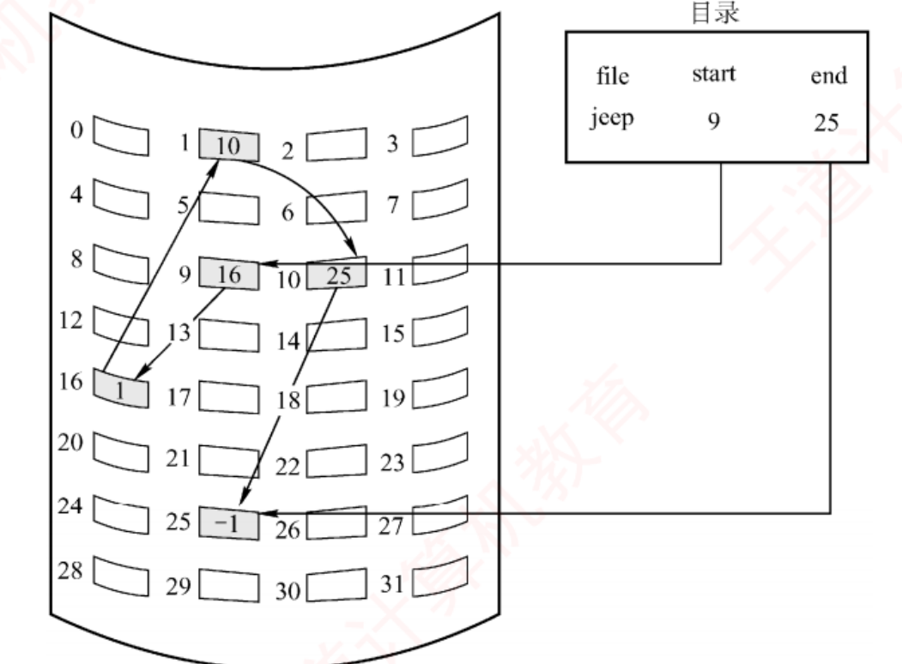
图 4.11 隐式链接方式（p.262）——目录里记的是 start=9 和 end=25 两个指针 ；灰块里写的数字不是数据，是指向下一块的指针 ：9→16→1→10→25→(−1)。⚠️ 整条链共 5 块，但要访问最后那块 25 必须先读 9、16、1、10 四块 ——这就是「随机访问效率极低」的字面意思。−1 是链尾标志 ，这个约定在图 4.12 的 FAT 里会再用一次。
必记 · 隐式链接的三条缺点
目录项中包含指向文件第一块和最后一块 的指针（盘块号） ；除最后一块外，每个盘块均存有指向下一个盘块的指针 ，这些指针对用户完全透明 。仅支持顺序访问 ——要访问第 i 块必须从首块开始依次跟随指针遍历，随机访问效率极低 ；可靠性较差 ——一旦链中任一指针损坏，整个链将断开；每个盘块需要存储指向下一块的指针，占用一定的存储空间 。
必记 · 簇（cluster）——为链接分配减负，代价是内部碎片
簇 ＝将若干连续的盘块 组合成的基本分配单位 ，文件的分配与链接均以簇 为单位。代价是可能产生内部碎片 ——文件大小不是簇大小的整数倍时，最后一个簇的剩余空间无法被其他文件利用 。
我的补讲 · 「簇」这个考点（2017、2018）只考一件事：向上取整
书上把簇讲成一个优化手段 → 但真题问的永远是「这个文件占几个簇 / 浪费了多少空间」 → 三步固定：
步 动作 例：簇 = 4KB，文件 10GB，盘块 512B ① 先统一单位 10GB = 10 × 2³⁰ B ② 簇数 = ⌈文件大小 ÷ 簇大小⌉ （必须向上取整 ）10 × 2³⁰ ÷ 2¹² = 2.5 M 个簇 ③ 内部碎片 = 簇数 × 簇大小 − 文件大小 整除时为 0；不整除时最多浪费「一个簇 − 1B」
⭐ 平均浪费 = 簇大小 ÷ 2 （每个文件平均浪费半个簇）——这与 ch3「每个进程平均产生半页页内碎片」是同一个结论 。
⚠️ 高频坑：题目给「盘块大小」和「簇 = k 个盘块」两个数，问的却是「几个盘块」 。
簇数算完别忘了 × k 。看清问的是簇还是块 ，这一步丢分的人比算错的人多。 （2）显式链接（FAT）
知识串联 · FAT ＝ 数构里的「静态链表」，一个字都不用改
连到数构 ch2 静态链表 的定义是：
用一个数组存放所有节点，节点的"指针"不是地址而是数组下标 。
FAT 完全符合：数组 = FAT 表，下标 = 盘块号，"指针" = 表项里存的下一块块号，−1 就是数构里的 -1 终止标志。
数构静态链表 本节 FAT data 域 + next 域（下标） 数据在盘块里，next 在 FAT 表项里（两者分离 ） −1 表示链尾 −1 表示文件最后一块 备用链（空闲节点串成一条链） −2 表示空闲块 （作用相同，实现更省：不用串链，扫描即可）
⟹ 由此可解释一个细节：为什么 FAT 用"标记值 −2"而不是像静态链表那样把空闲块串成链？
因为FAT 常驻内存，扫描一遍很便宜 ；而数构里的静态链表要 O(1) 取空闲节点，只好串链。
同一个数据结构，在不同代价模型下会做出不同的工程选择 ——这条思路本身就是好答题素材。
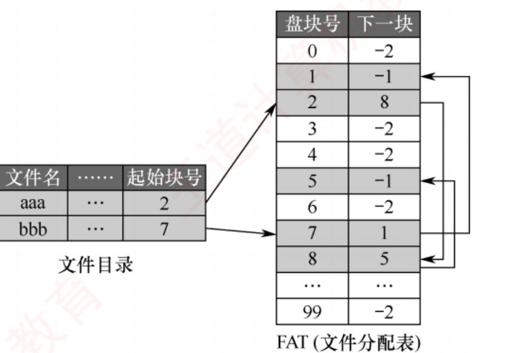
图 4.12 磁盘的文件分配表（p.263）——左边文件目录只记「起始块号」（aaa→2、bbb→7），右边 FAT 才是全部的链接信息 。顺着 FAT 读：aaa 是 2→8→5→(−1)，bbb 是 7→1→(−1) 。⭐ 值 −2 的表项（0、3、4、6、99…）就是空闲盘块 ——这是 FAT 相比 inode 多出来的一项本事，2019 与 2025 两年隔空考的就是它。
必记 · FAT 的四条结论（每条都被单独考过）
① 全系统只有一张 FAT ，每个表项对应一个磁盘块 ，存放指向下一个盘块的指针；目录项只需记录起始块号 。② 约定：−1 标记文件的最后一块，−2 表示该盘块空闲 （也可指定 −3、−4 等）。③ FAT 不仅记录了文件的链式结构，还标识了空闲盘块 ⟹ 系统可直接利用 FAT 管理磁盘的空闲空间 （请求分配时只需在 FAT 中查找值为 −2 的表项）。④ FAT 在系统启动时即被载入内存 ⟹ 既支持顺序访问，也支持直接访问 ，要访问第 i 块无须依次遍历前 i−1 块 。缺点：FAT 需要常驻内存，磁盘容量越大，内存开销越显著。
我的补讲 · FAT 的大小怎么算（2019/2025 两道真题的共同底座）
书上没给 FAT 大小的公式 → 但两道真题都要用 → 自己推一遍，只有两步：
FAT 表项数 = 磁盘总块数 · 每个表项位数 = ⌈log₂(总块数)⌉ （要能表示任一块号）总块数 × 表项字节数
例：磁盘 1TB、块 4KB ⟹ 总块数 = 2⁴⁰/2¹² = 2²⁸ 块 ⟹ 块号需 28 位 ⟹ 实际取 4B ⟹ FAT = 2²⁸ × 4B = 1GB ，整整 1GB 常驻内存。
⟹ 这一算就明白了书上那句「磁盘容量越大，内存开销越显著」有多严重，也就明白了 为什么 UNIX 要改用 inode ：
FAT 的大小正比于整块磁盘 ，而 inode 的开销只正比于被打开的那个文件 。
这是 FAT 与 inode 最本质的一条分界线，比「谁能管空闲块」更根本。 陷阱 · 「FAT 能管空闲块，inode 不能」——2019 与 2025 隔了六年考同一件事
2019（4.3 选 15）：问哪种空闲空间管理方法可以由 FAT 兼任 ⟹ 因为 −2 就表示空闲 ，FAT 天然是一张空闲块表。 2025（4.2 选 69）：反过来问 FAT 的作用 ⟹ 同一个知识点换个方向问。 为什么 inode 做不到？inode 只描述"某个文件用了哪些块"，它对"没被任何文件用的块"一无所知 ；
而 FAT 的表项覆盖全盘每一块 ，没被占用的块自然就在表里露了出来。 ⟹ 一句判据：「按盘编号的表能管空闲，按文件组织的表不能。」
位示图、成组链接法也都是「按盘编号」的，所以它们也能管空闲；而索引块、目录项都不能。
3．索引分配
我的补讲 · 索引分配对 FAT 的那句"动机"，是理解 inode 存在意义的钥匙
书上说索引分配的动机是「打开某文件时只需将该文件所占用的盘块编号调入内存即可，无须加载整个 FAT 」 →
这句话拆开是一组鲜明的对比：
FAT 索引块 / inode 表的规模正比于 整块磁盘 （总块数）单个文件 （文件占几块）什么时候进内存 系统启动时，全部 文件被打开时，只进它自己那份 内存占用 固定且巨大 （1TB 盘要 1GB）正比于同时打开的文件数 随盘变大会怎样 线性膨胀，无法承受 基本不变
⟹ 这就是 UNIX 弃 FAT 用 inode 的根本理由 ，比"能不能管空闲块"更本质：
FAT 的开销跟着磁盘 走，inode 的开销跟着正在用的文件 走。
⚠️ 代价也很清楚：FAT 能顺手管空闲块，inode 不能 （4.3.2 要另建位示图或成组链接法）。
凡是"把全局表拆成局部表"的设计，都会失去全局视野 ——这条在 ch3 的「反置页表 vs 每进程页表」上也成立。
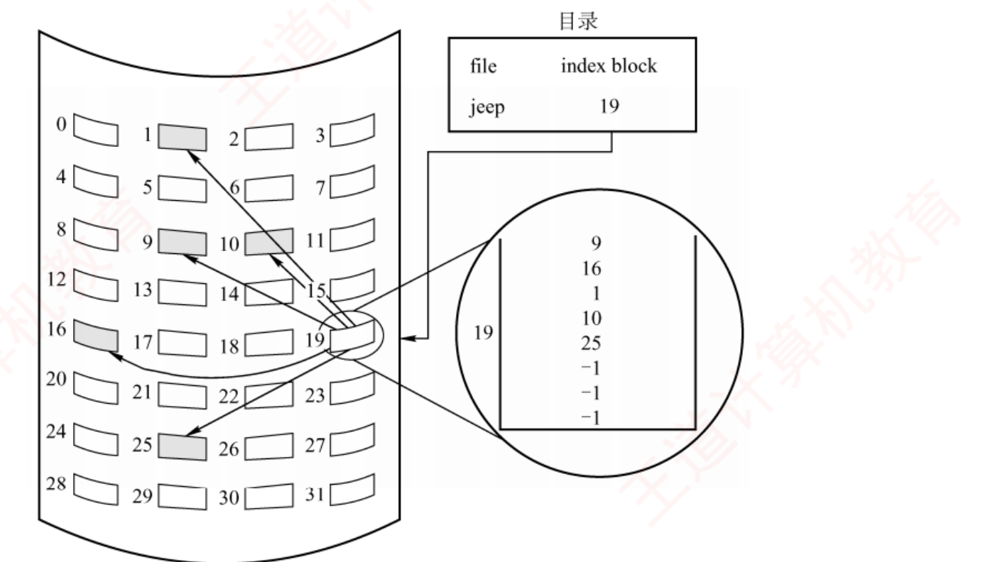
图 4.13 索引分配（p.264）——目录里记的是 index block = 19 ，19 号盘块本身不存数据，存的是一张表：9, 16, 1, 10, 25, −1, −1, −1 。⚠️ 把它和图 4.11 的隐式链接对照着看 ：用的是同样的 5 个数据块（9/16/1/10/25），但指针从"散在各个数据块里"集中到了"一个索引块里" 。要读第 5 块，隐式链接要访盘 5 次，索引分配读索引块 1 次 + 读数据块 1 次 = 2 次 。
必记 · 单级索引：一个索引块能装多少、能撑多大文件
系统为每个文件分配一个专用的索引块（索引表） ，把分配给该文件的所有盘块号记录其中。书例 ：盘块 4KB、每个盘块号占 4B ⟹ 一个索引块可容纳 4KB/4B = 1024 个盘块号 ⟹ 单级索引最大文件 = 1024 × 4KB = 4MB 。支持高效的直接访问 ——访问第 i 块只需读索引块中第 i 项；② 不会产生外部碎片 。索引块利用率极低 ；② 大文件超出单块容量时，虽可用链式指针把多个索引块连起来，但这种方法效率低下 。
我的补讲 · 「一个索引块装多少项」是本章所有容量题的第一步，别把两个数弄反
书上给的 1024 是 4KB ÷ 4B → 潜台词是这两个数分别来自"盘块大小"和"盘块号长度" → 而题目最爱把它们换成不同的数：
每个索引块的表项数 K = 盘块大小 ÷ 每个盘块号所占字节数
题目给的数 K 单级索引最大文件 盘块 4KB，盘块号 4B 1024 = 2¹⁰ 1024 × 4KB = 4MB 盘块 1KB，盘块号 4B 256 = 2⁸ 256 × 1KB = 256KB 盘块 512B，盘块号 2B 256 = 2⁸ 256 × 512B = 128KB
⚠️ 两个高频坑：① 盘块号有时按"位"给（如 24 位地址） ，要先 ÷8 换成字节，且通常按 3B 或对齐到 4B ——题目一般会说清；
② 「盘块号」和「盘块大小」都带"盘块"二字 ，读题时把它们分别圈出来，别相乘成一团。 （2）多级索引分配方式
我的补讲 · 多级索引的容量公式，用「扇出度的幂」一步写出来
书上一级一级地举例（4MB → 4GB） → 潜台词是它是等比的 → 直接写成通式，省得每次重推：
m 级索引最大文件 = Km × 盘块大小 （K = 盘块大小 ÷ 盘块号字节数）
级数 m 能表示的块数 K=1024、盘块 4KB 时 访盘次数 0（直接） 1（一个地址项一块） 4KB / 项 1 1 K 4MB 2 2 K² 4GB 3 3 K³ 4TB 4
⭐ 两条口诀：「每加一级，容量 ×K，访盘 +1。」 ——容量指数增长、代价线性增长，这正是分级为什么划算。
⚠️ 但注意这里算的是单独用 m 级索引 的容量；混合索引要把四段相加 。两者别混。
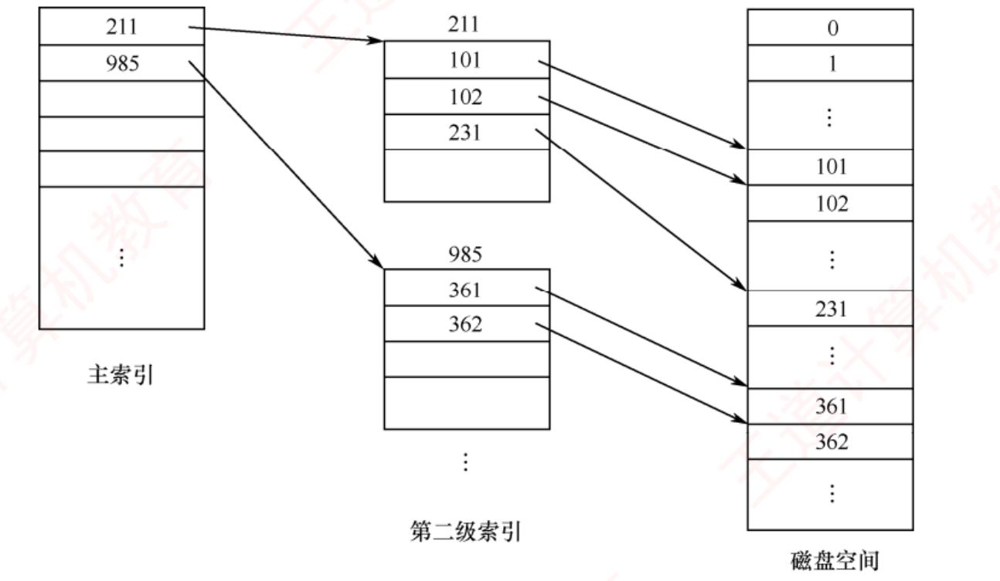
图 4.14 二级索引分配（p.264）——三列从左到右：主索引 → 第二级索引 → 磁盘空间 。主索引里存的 211、985 不是数据块号，是二级索引块的块号 ；点进 211 号块，里面存的 101、102、231 才是数据块号。⚠️ 访问一个数据块要读三次盘：主索引块 → 二级索引块 → 数据块 ，这就是「m 级索引 = m+1 次访盘」的图像来源。
必记 · 多级索引的容量与代价
为索引块再建一级索引，称为主索引 ；主索引表中依次存放各二级索引的盘块号。其设计思想与内存管理中的多级页表高度相似 （书上明写，对照 ch3 图 3.11）。书例 ：盘块 4KB、盘块号 4B ⟹ 两级索引最大文件 = 1024 × 1024 × 4KB = 4GB 。访问一个盘块所需的磁盘 I/O 次数随索引级数增加而增多 ；若仅 采用多级索引，则即使对大量小文件，访问单个盘块仍需多次磁盘 I/O 。
知识串联 · 多级索引 ↔ 多级页表：书上主动叫你翻 ch3，这是全章最该串的一处
承 ch3 3.1.3 两者是同一个数据结构，只是换了个名字：
本节（多级索引） ch3（多级页表） 同在哪 索引块装 1024 个盘块号 一页装 1024 个页表项 都是「一块 ÷ 一项」得到扇出度 K 主索引 → 二级索引 → 数据块 页目录 → 页表 → 数据页 都是逐级用下标去索引 m 级索引访盘 m+1 次 m 级页表访存 m+1 次 公式一字不差 小文件也要读多层 ⟹ 用混合索引 补救 每次访存都要多层 ⟹ 用 TLB 补救 补救思路不同：一个改结构，一个加缓存
⚠️ 但有一处关键差别，考试爱在这里设坑：页表是"满的"（每一页都有表项），索引块是"按需的"（文件多大就用几项） 。
所以页表大小只看地址空间，索引结构大小只看文件实际长度 ——
这正是 2018/2022 那两道「文件占用多少索引块」的题里，不能拿"最大容量"去算实际占用的原因。 （3）混合索引分配方式 ← 本章最重要的一个知识点，四年真题（2010/2015/2018/2022）
知识串联 · UNIX 的 13 个地址项，和 ch3 两级页表的 1024 项，是同一道「扇出度」算术
承 ch3 3.1.3 ch3 里「4KB 一页、页表项 4B ⟹ 一页装 1024 个页表项 ⟹ 两级页表覆盖 2²⁰ 个页面 = 4GB」
与本节「4KB 一块、盘块号 4B ⟹ 一个索引块装 1024 个块号 ⟹ 两级索引 4GB」是同一道算术 ，连 4GB 这个结果都一样。 ⟹ 这不是巧合：两者都是「32 位地址空间 ÷ 4KB 粒度 ÷ 每级 1024 扇出」 。
所以你在 ch3 练熟的「先算扇出度 K，再看要几级才够」这套手法，本节可以整批搬来用。 ⚠️ 唯一要改的一处：页表是"必须覆盖整个地址空间"，索引是"文件多大用多少" 。
页表算的是上限，索引算的是实际占用 ——所以本节会多出一类 ch3 没有的题：
「存这个文件一共要占多少个盘块（含索引块）」 。
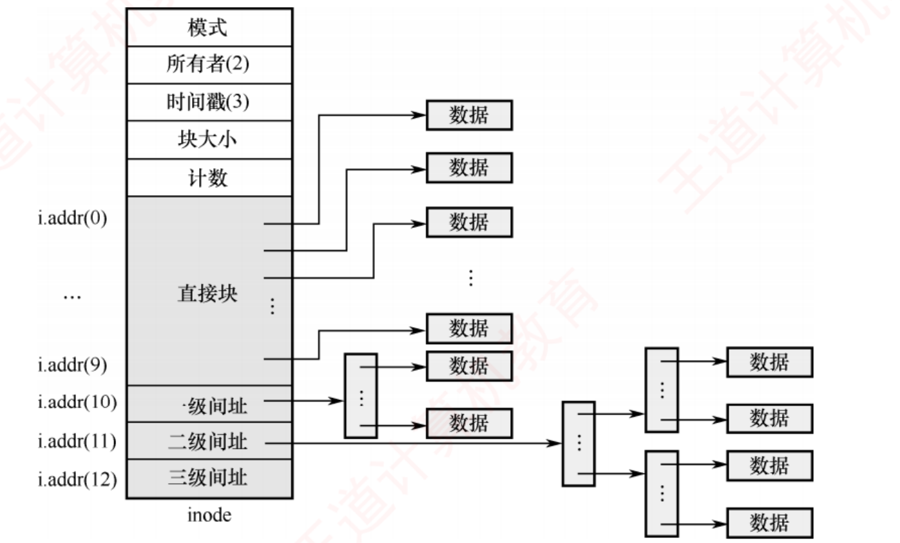
图 4.15 UNIX 系统的 inode 结构示意图（p.265）——全章最该盯住的一张图 。左边灰柱就是 inode：上面五格是元数据（模式/所有者/时间戳/块大小/计数），下面 13 格才是地址项。i.addr(0)~i.addr(9) 十格直接指向数据块；i.addr(10) 先指到一个索引块再指数据；i.addr(11) 要经过两层；i.addr(12) 经过三层。 ⚠️ 看右边：每多一层间址，箭头就多拐一次弯，而每拐一次弯就多一次访盘 ——图里数一数箭头段数，正好是 1/2/3/4。
我的补讲 · 「文件长度变了，访盘次数会不会变」——一个很好的自测问题
这是判断你是否真懂混合索引的试金石。答案分两半：
问 答 理由 访问同一个逻辑块号 ，文件变长后访盘次数变吗 ❌ 不变 走哪条路只取决于逻辑块号 ，与文件总长无关 ——第 5 块永远走直接地址访问文件最后一块 ，文件变长后访盘次数变吗 ✅ 可能变 最后一块的逻辑块号变大了，可能跨进下一段间址 文件从 40KB 长到 44KB，多占几块 1 个数据块 + 1 个一次间址块 = 2 块 ⭐ 跨段时会突然多出一个索引块 ——这是"临界点题"的出题点
⟹ 记住这条：「跨段的那一刻，代价是阶跃的，不是渐变的。」
文件从 40KB 长到 44KB，只多了 4KB 数据，却多占了 2 个块、访盘从 1 次变成 2 次。
凡是题目给的数字恰好卡在 40KB / 4MB+40KB / 4GB+4MB+40KB 附近，一定是在考这个阶跃。 必记 · UNIX 的 13 个地址项与四段容量（🐍 已逐项复算）
UNIX 索引节点中共设
13 个地址项，即 i.addr(0) ~ i.addr(12) 。设
盘块 4KB，一个索引块容纳 1K = 1024 个盘块号 ：
i.addr(0)~(9) 直接地址= 40KB
i.addr(10) 一次间址= 4MB
i.addr(11) 二次间址= 4GB
i.addr(12) 三次间址= 4TB
⭐
累计最大文件长度（四段相加 ）：
用到哪些地址项 最大文件长度 仅直接地址 40KB 直接 + 一次间址 4MB + 40KB 直接 + 一次 + 二次 4GB + 4MB + 40KB 直接 + 一次 + 二次 + 三次 4TB + 4GB + 4MB + 40KB
⭐
访问次数口诀 ：直接块
1 次 读盘；一次间址
2 次 （索引块 + 数据块）；二次间址
3 次 ；三次间址
4 次 。
（若 inode 本身还需从磁盘读入，各再 +1；题目通常说明「inode 已在内存」。）
我的补讲 · 混合索引题的四步解法（把这四步抄在草稿纸最上方，四道真题通用）
2010/2015/2018/2022 四道真题，问法各不相同，但解法完全一样：
步 动作 为什么这么做 ① 先算 K = 盘块大小 ÷ 盘块号字节数 K 是唯一的自由参数，后面全是 K 的幂 ② 写出四段的块数 ：10、K、K²、K³ 先算块数不算字节数，可以避开单位换算错误 ③ 写出四段的逻辑块号区间 ： 问「第 n 块要访盘几次」时，只需看 n 落在哪个区间 ④ 要问容量就把块数 × 盘块大小再相加 四段相加，别只取最大那一段
⭐ 第 ③ 步的区间表是本节最好用的东西 （以 K = 1024、盘块 4KB 为例，逻辑块号从 0 起）：
逻辑块号 n 走哪条路 访盘次数 对应文件偏移 0 ~ 9 直接地址 1 0 ~ 40KB 10 ~ 1033 一次间址 2 40KB ~ 4MB+40KB 1034 ~ 1049609 二次间址 3 … ~ 4GB+4MB+40KB 1049610 起 三次间址 4 … ~ 4TB+…
（1033 = 9 + 1024，1049609 = 1033 + 1024²。考场上不必背这些数，把 ③ 的区间式写出来现算即可 。） 陷阱 · 混合索引三个最容易丢分的地方
① 「最大文件长度」要四段相加 ，不是取最大那段。 常见错答「4TB」，正确是「4TB + 4GB + 4MB + 40KB」。
但如果题目问的是"约为多少"或给的选项只有量级 ，那 4TB 就够了——看选项定精度 。② 「访盘次数」要看题目有没有说 inode 已在内存。 若题目说「文件尚未打开」，则每一条路都要先读 inode（+1 次） 。③ 「间址块本身也要占盘块」。 问「存储一个 X 大的文件共占多少盘块」时，
除数据块外还要算上：1 个一次间址块 + 1 个二次间址主块 + 若干个二次间址的下级块……
这正是 4.2 综 09(2) 那个「≈512 个间接索引块」的来源：精确值是 1 + ⌈(524288 − 10 − 1024)/1024⌉ = 1 + 511 = 512 ，
书上写了个「≈」，容易让人误取 511——那个多出来的 1 就是二级索引的主索引块 。
我的补讲 · 为什么偏偏是「10 个直接 + 各一个一/二/三次间址」这个配比
书上只说「根据文件大小动态选用最合适的分配策略」 → 潜台词是这个配比是被文件大小分布逼出来的 → 想通这一层，这张表就再也不会记反：
文件多大 现实中占比 用哪一段 代价 ≤ 40KB（绝大多数） 绝大多数文件 （配置文件、源码、小图）直接地址 1 次访盘，零索引块开销 ≤ 4MB 常见文档、图片 一次间址 2 次访盘，1 个索引块 ≤ 4GB 视频、镜像 二次间址 3 次访盘 更大 极少 三次间址 4 次访盘
⟹ 设计意图一句话：「让绝大多数文件走最快的路，让极少数大文件承担多层代价。」
这就是为什么直接地址项要占 10 个（覆盖最常见的一档），而三级间址只留 1 个（够用就行）。
⚠️ 这也是它对纯多级索引的优势所在——纯多级索引让小文件也要走 m+1 次 ，书上那句「即使对于大量小文件，访问单个盘块仍需多次磁盘 I/O」说的就是这件事。 知识串联 · 混合索引 ＝ 段页式的"分段治之"，也 ＝ 组原多级 Cache 的思路
承 ch3 混合索引对不同大小的文件用不同的映射层数 ，与 ch3 里段页式 「对不同性质的地址区间用不同管理方式」是同一种设计哲学。连到组原 ch3 更贴切的类比是多级 Cache ：L1 小而快、L2 中、L3 大而慢 ——
让绝大多数访问命中最快的一级，让少数访问承担多级代价 ，与「10 个直接地址项 + 三级间址」的取舍逻辑一字不差。⟹ 记住这条通用设计律：「按访问频度分层，把最快的路留给最常见的情况。」
它在 408 里至少出现五次：多级 Cache、TLB、混合索引、快表、以及 ch5 的磁盘缓存。
📄 p.266
4.2.7 文件的操作 ⭐ 全章第二重心：5 处考点追踪 · 2012–2025 几乎每年
知识串联 · 六个文件操作，正好对应 ch2 进程的六个状态转换动作
承 ch2 2.1 把两组动作并排，会发现 OS 对"资源"的管理套路是统一的：
文件（本节） 进程（ch2） 共同点 create ：建 inode + 建目录项创建 ：建 PCB + 分配资源先建控制块，再挂进那张表 open ：建内存表项，返回 fd就绪 ：挂入就绪队列"准备好被使用"的状态 read / write 运行 真正干活的阶段 close ：删内存表项，计数减 1阻塞 / 让出 只动内存结构，不动本体 delete ：删目录项，count 归零才回收撤销 ：回收 PCB 与全部资源彻底消失
⟹ 最值得记的一格是第四行：「close 之于文件，正如让出 CPU 之于进程——都只是停止使用 ，不是销毁 。」
2023 年那道 close 题，用这个类比一秒就能判对。 考点追踪 · 文件创建的过程（2025）· 文件删除的过程（2013、2021）
我的补讲 · create 与 delete 是严格互逆的，背一个就等于背两个
把 6 步创建和 7 步删除并排放，会发现它们逐条对称 → 只需记住创建，删除倒着念即可 ：
create delete（倒序） ① 校验文件名 + 目录写权限 ① 路径解析 + 目录写权限 ② 分配 inode ④ 释放 inode（count 归零时 ） ③ 分配磁盘块 ⑤ 释放磁盘块（count 归零时 ） ④ 新建目录项 <文件名, inode 号> ③ 移除目录项 ⑤ 更新元数据 ⑦ 更新元数据 ⑥ 可选：打开并返回 fd ⑥ 可选：释放内存临时资源
⭐ 删除比创建多出的唯一一条 就是第 ② 步「检查使用状态与硬链接计数 」——
这一条正是 2021 那道真题的全部考点 ，也是创建里没有对应物的一步（创建时 count 直接置 1，无须判断）。
⟹ 记法：「删除 = 创建的逆过程 + 一道 count 检查。」 考点追踪 · 文件打开的过程与分析（2014、2017、2020）· 文件关闭的过程（2023）
知识串联 · 两级打开文件表 ＝ ch3 的「共享页面 + 私有页表」＝ 同一种"共享本体、私有视图"
承 ch3 3.1.3 「一份本体，多个私有视图」这个模式在 408 里出现四次，本节是最典型的一次：
场景 共享的本体 私有的视图 本节 系统打开文件表项 （磁盘位置、大小）进程打开文件表项 （读写指针、访问模式）ch3 内存共享 物理页框里的代码/数据 各进程自己的页表项 （可以映射到不同逻辑地址、不同权限）ch3 写时复制 一份只读页 写的时候才各自复制一份 ch2 线程 进程的地址空间与打开文件表 各线程自己的栈与寄存器现场
⟹ 四处的设计判据完全相同：「所有人看到的都一样的东西 ⟹ 共享；每个人不一样的状态 ⟹ 私有。」
用这一句就能秒判"读写指针在哪张表"，不必背。 考点追踪 · 文件名和文件描述符的应用场景（2012、2017、2024）
知识串联 · fd 是「句柄」这一类设计的代表，408 里至少有四个同类
跨科枢纽 · 用一个小整数代表一个内核对象
科目 句柄叫什么 指向内核里的什么 好处 OS ch4（本节） 文件描述符 fd 进程打开文件表项 → 系统表项 → inode 用户拿不到内核指针，安全 OS ch2 PID PCB 同上 OS ch2 信号量 / 消息队列 id 内核 IPC 对象 同上 OS ch5 逻辑设备名 物理设备 设备独立性
⟹ 四处共享同一条安全原则：「用户态只能持有编号，不能持有地址。」
内核用这个编号去查表，顺便就做了合法性检查（越界、是否已打开、权限）。
这也是为什么 fd 是「小整数」而不是「指针」——它是数组下标 ，与 ch3「页号是页表下标」同构。 我的补讲 · 本小节 3 页，撑起 2012–2025 十年里的九道真题，先看这张「谁动谁」的总表
本节所有真题只考一件事：某个操作到底动了哪些结构 。我把六个操作横过来排成一张表，考场上照着勾：
操作 动目录项？ 动磁盘 inode？ 动系统打开文件表 动进程打开文件表 动数据块？ create ✅ 新增 ✅ 分配 可选（若创建后立即打开） 可选 ✅ 分配 delete ✅ 移除 ✅ 仅当 count 减到 0 — — ✅ 仅当 count 减到 0 open ❌ 只读 不改 ❌ 只读 不改 ✅ 新建项或打开计数 +1 ✅ 新增表项，返回 fd ❌ read / write ❌ 写时可能改（长度/块指针） ❌ ✅ 更新读/写指针 ✅ close ❌ ❌（关键！） ✅ 打开计数 −1，归零则删项 ✅ 删除对应项 ❌
⚠️ 这张表里有三个格子 是历年失分最集中的：
① close 那一行的「动磁盘 inode？= ❌」 ——
关闭文件不等于把数据写回磁盘 （2023 直接考）；
② open 那一行的「动 inode？= 只读不改」 ——打开只是把 inode
复制 一份到内存；
③ delete 那一行的两个「仅当 count 减到 0」 ——
硬链接 count > 1 时只删目录项 （2021 考过）。
1．文件的基本操作
我的补讲 · 六个操作里，只有两个会「分配磁盘空间」——这是个很好的自查点
把「谁会向空闲空间管理模块要块」这一列单独拎出来，一眼看清本节与 4.3.2 的接口：
操作 要分配盘块吗 要回收盘块吗 create ✅ （按预估大小分配，还要分配 inode）❌ write ✅ 仅当写超出当前分配空间 （书上明写）❌（截断除外） read / open / close ❌ ❌ delete ❌ ✅ 仅当 count 归零
⟹ 由此可以回答一个常考的"什么时候会发生磁盘满"：create 和 write 时 ，而不是 open 时。
open 一个已存在的文件永远不会因为磁盘满而失败 ——这是一道很好的判断题。
⚠️ 顺带钉住 write 的那半句：「若写入超出当前分配空间，系统将动态分配新磁盘块并更新 inode 中的块指针」 ——
这句话同时说明了两件事：write 可能改 inode，且这正是"文件能动态增长"的实现处 。
连续分配之所以"难以支持动态增长"，卡的就是这一步要不到相邻的块。 必记 · 创建文件的 6 步（2025 真题）
① 合法性与权限校验 ：文件名是否合法、是否与同目录下已有文件重名，并验证用户对目标目录 是否有写权限 。任一条件不满足则立即终止 。② 分配索引节点 ：从空闲 inode 池分配一项，初始化元数据（类型、初始大小、权限、时间戳、物理块指针）。③ 分配磁盘块 ：根据文件预估大小分配物理块，块地址记入 inode。④ 在目录中新建目录项 ，格式为 <文件名，索引节点号> 。⑤ 更新文件系统元数据 ：空闲 inode 表、空闲磁盘块结构、目录大小、修改时间。⑥ 打开并返回文件描述符（可选） 。
必记 · 删除文件的 7 步（2013、2021 真题）
① 路径解析与定位 ：逐级查找目录定位目录项，取得 inode，并验证用户对文件所在目录 的写权限 。② 检查使用状态与硬链接计数 ：⭐ 若硬链接计数大于 1，则仅删除当前目录项并将计数减 1，不回收 inode 与磁盘块 ；仅当计数为 1 时才执行完整删除流程。 若文件正被打开，部分系统会延迟物理删除 。③ 移除目录项 （完成逻辑删除 ）· ④ 释放索引节点 （计数降至 0 时）· ⑤ 释放磁盘块 · ⑥ 释放内存临时资源（可选） · ⑦ 更新文件系统元数据 。
陷阱 · 「验证的是对目录 的写权限，不是对文件 的写权限」
创建和删除文件，检查的都是目标目录 的写权限——因为这两个操作改的是目录项 ，不是文件内容。 推论（Linux 上真实成立，也是一道好判断题）：你对一个文件没有任何权限，但只要你对它所在的目录有写权限，你就能删掉它。 ⟹ 记法：「改目录项 ⟹ 查目录权限；改文件内容 ⟹ 查文件权限。」
这也是 4.2.9 里「文件保护还必须提供专门的目录保护机制 」那句话的动机。
必记 · 读文件与写文件（两条都以「指针」收尾）
读 ：按文件名在目录中查目录项 → 获取索引节点号 → 定位外存数据块 → 依据当前读指针 读取 → 更新读指针 。写 ：同样查目录项 → 获取索引节点号 → 依据当前写指针 写入 → 更新写指针 。
若写入超出当前分配空间，系统将动态分配新磁盘块并更新 inode 中的块指针。
2．文件的打开与关闭
我的补讲 · 「为什么要有 open」——这个问题的答案就是打开文件表存在的全部理由
书上给的理由是「若每次均需从检索目录开始，将带来显著的性能开销」 → 把这句话量化，就明白 open 到底省了什么：
没有 open（每次 read 都给文件名） 有 open 每次读操作要做 逐级解析路径 → 读若干级目录 → 读 inode → 读数据 查一次数组下标 → 读数据 访盘次数 路径深度 × 2 + 1 1 权限检查 每次都要查 只在 open 时查一次
⟹ 由此还能回答一个"为什么"型的好问题：为什么权限只在 open 时检查，之后就不查了？
答：因为权限信息被缓存进了进程打开文件表 （4.2.7 末尾第 ④ 项）。
代价是：文件权限在打开后被改动，已打开的进程不受影响 ——这在 Linux 上真实成立，也是一道很好的判断题。
⚠️ 这条恰好说明 open 的本质：它是一次预解析 + 预授权 + 建缓存 ，不是"把文件读进内存"。
凡是选项说「open 会把文件内容装入内存」，一律错。
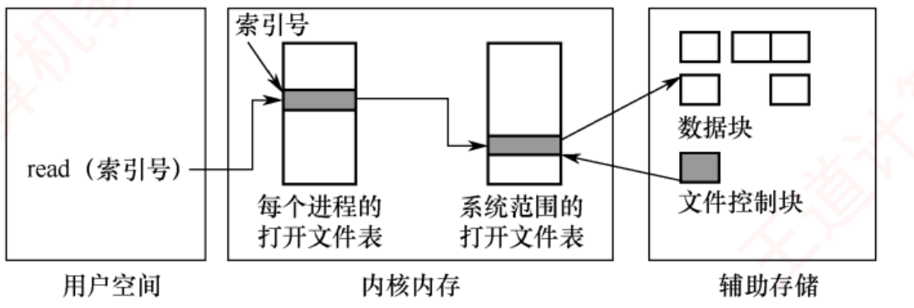
图 4.16 内存中文件的系统结构（p.267）——三个方框就是三层空间 ：用户空间只拿着一个「索引号」（＝文件描述符），内核内存里有两张表 ，辅助存储上才是真正的数据块和 FCB。⚠️ 看中间那两张表之间的箭头是「多对一」 ：多个进程各有一项，但都指向系统表里的同一项——这正是"上下文隔离 + 资源共享"的图像 ，也是「读/写指针必须在左边那张表」的直接理由。
必记 · 两级打开文件表的分工（本节最高频考点，2014/2017/2020 三年）
表 归属 存什么 系统打开文件表 全局共享，整个系统一张 与进程无关 的文件属性：磁盘位置、文件大小、访问时间 ；每项都包含一个打开计数器 Open Count 进程打开文件表 每个进程独有 进程私有 的访问状态：当前读/写指针、访问权限、文件打开模式 ；每一项指向系统表的对应项
⭐
「打开」＝ 系统根据文件路径定位到目录项后，把关键信息载入内存，在打开文件表中创建表目，并将该表目的索引号（文件描述符） 返回给用户。 陷阱 · ⚠️⚠️ 教材内部口径冲突：读/写指针到底在哪张表？
本节（4.2.7）与 2017 选 61、2020 选 64 的解析都说：读/写指针在进程（用户） 打开文件表 ； 但 4.3.1「文件系统在内存中的结构」那一段，把读/写指针写进了系统级 打开文件表 ——两处自相矛盾。 📌 考试一律以本节与真题解析为准：读/写指针属于进程打开文件表 。 理由是可推的，不必死记：两个进程同时打开同一文件，各自读到哪里必须互不干扰 ⟹ 指针只能是私有的 ⟹ 只能在进程表里。
反过来，打开计数是"有几个进程"这件全局的事，只能在系统表里 。 ⟹ 一句判据：「问『这个进程读到哪了』 → 进程表；问『有几个进程』 → 系统表。」
必记 · 文件打开的完整过程（原文，2014/2017/2020 的答案来源）
① 根据用户提供的文件路径逐级遍历目录 ，将所需的目录文件从磁盘加载至内存，定位目标文件的目录项；索引节点编号 ，并以此为关键字在系统打开文件表中查找对应项 ；若未找到，则从磁盘读取该索引节点至内核缓冲区，在系统表中创建新项，并将打开计数初始化为 1；若已存在，则仅将该项的打开计数加 1 ；进程打开文件表中分配一个新表项 ；索引号作为文件描述符返回给用户进程 。
必记 · 文件关闭 close（2023 真题）
① 从该进程 的打开文件表中删除对应项；② 将系统 打开文件表中相应项的打开计数器减 1 ；
③ 一旦计数器减至 0，删除其在系统表中的项，并释放所占用的相关资源。
我的补讲 · 2023 年那道题的要害：close 一个字都没提磁盘
把上面 close 的三步逐字读一遍 → 没有任何一步涉及"写回磁盘" → 潜台词是 close 只是一次内存记账 → 所以能考：
说法 对错 为什么 「close 会把文件数据写回磁盘」 ✗ 写回由缓冲区管理策略 决定（可能早已写回，也可能还在脏页里等着） 「close 会把内存 inode 写回磁盘 inode」 ✗ close 只删表项、减计数；元数据同步是另一套机制（sync） 「close 后文件描述符失效」 ✓ 进程表里那一项已经删了 「最后一个进程 close 后，系统表项才被删除」 ✓ 计数归零才删 「close 会删除文件」 ✗ 删文件是 delete，动的是目录项和 count ，两码事
⟹ 一句总结：open/close 这一对动的是「内存里的账」，create/delete 这一对动的才是「盘上的东西」。
把这两对分开，本节九道真题全部迎刃而解。 必记 · ⭐⭐ 文件名并非打开文件表的组成部分（2012、2017、2024）
一旦系统通过文件名完成对磁盘上 FCB 的定位，后续操作便不再需要该文件名。
用于访问打开文件表的索引号，也称文件描述符（Linux） 或文件句柄（Windows） 。
只要文件处于打开状态，所有文件操作均通过该索引号完成。 【注意】框（原文）：一旦成功执行 open() 系统调用，后续所有文件操作 [ 包括 read()、write()、lseek()、close() 等 ] 均不再使用文件名，而是通过文件描述符进行，这一机制是文件管理的核心考点 。
陷阱 · 「read 的参数里有没有文件名」——王道专门加了个注意框，说明它年年有人错
三年真题（2012 选 54 的 Ⅲ、2017、2024 选 68）问的是同一件事：哪些系统调用需要文件名 。
系统调用 用文件名还是 fd 记法 open / creat 文件名 只有"第一次见面"用名字 unlink / rename / stat 文件名 它们操作的是目录项 ，目录项就是靠名字找的 read / write / lseek / close / fstat fd "认识之后就叫编号"
⟹ 判据：「凡是操作文件内容或当前位置 的，用 fd；凡是操作目录项 的，用文件名。」
这个判据比背清单可靠，因为它解释了为什么 rename 明明文件已经打开着也还得用名字。 必记 · 每个被打开的文件关联的四项关键信息
① 文件指针 ：每个进程一个独立的当前读/写位置指针。由于该指针对不同进程是私有的，必须与磁盘上的共享文件属性分离，保存在进程 的打开文件表中 。② 文件打开计数 ：系统只有在最后一个进程调用 close() 后，才会真正释放其在系统打开文件表中的项 。③ 文件磁盘位置 ：系统将文件在磁盘上的位置信息缓存在内存中 ，避免每次操作重新解析路径。④ 访问权限 ：每个进程打开时指定访问模式（只读、读/写、追加、创建等），保存在进程 的打开文件表中 。
知识串联 · 文件描述符 ↔ PCB ↔ 进程控制，三条线在这里汇合
承 ch2 进程打开文件表就住在 PCB 里 ——ch2 讲 PCB 内容时列过「文件管理信息：打开文件列表」这一条，
它指的就是本节这张表 。由此串出三条 ch2 结论：
ch2 的结论 在本节的解释 fork 出的子进程"继承"父进程打开的文件 子进程复制了父进程的进程打开文件表 ，两者的表项指向同一个系统表项 ⟹ 共享同一个读写指针 （这是 fork 与 open 的关键差别） 线程共享进程的资源 同一进程的多个线程共用一张进程打开文件表 ⟹ 一个线程 lseek，另一个线程会受影响 进程终止时释放资源 OS 会遍历进程打开文件表逐项 close ⟹ 系统表的打开计数逐个减 1
⟹ 这也解释了 fd 为什么是个「小整数」：它就是进程打开文件表的数组下标 ，与 ch3 里「页号是页表的下标」一模一样——
都是「按下标直接定位、不存关键字」的直接定址法 （数构 ch7）。 📄 p.268
4.2.8 文件共享
我的补讲 · 共享与保护是一对矛盾，本章 4.2.8 与 4.2.9 是它的两面
书上把它们排成相邻两小节 → 潜台词是它们是同一个问题的正反两问 → 合起来读：
4.2.8 共享 4.2.9 保护 要解决的问题 让多个用户能用同一份数据 （省空间、保一致）让不该碰的人碰不到 手段 硬链接（共享 inode）· 软链接（共享路径） ACL · 口令 · 加密 代价 删除变复杂 ⟹ 要引用计数 要存权限信息 ⟹ 占元数据空间
⟹ 4.2.9 的开头一句就把两节缝在了一起：「为防止文件共享 导致文件被意外破坏或被未授权用户篡改……」
——正是因为先有了共享，才必须有保护 。
⚠️ 这也解释了一个细节：硬链接的两个目录项共享同一套权限 （权限在 inode 里），
所以你没法通过建硬链接给同一个文件设两套权限 。这是一道很好的判断题，答案由"权限存在哪"直接推出。 考点追踪 · 硬链接的原理与相关分析（2009、2017）· 软链接的原理与相关分析（2009、2021）
我的补讲 · 一张「count 怎么变」的推演表，四道真题的动作全在里面
软硬链接的题目几乎都是「做完这一串操作后，count 是多少 / 还能不能访问」。照这张表逐步推演即可 ：
操作 F 的 count L 的 count F 还能访问吗 L 还能用吗 初始：A 创建 F 1 — ✅ — B 对 F 建硬链接 2 — ✅ — A 删除自己的目录项 1 — ✅（B 仍可访问，owner 仍是 A） — B 也删除 0 ⟹ 文件真正被回收 — ❌ — 换成软链接的场景 初始：A 创建 F 1 — ✅ — B 对 F 建软链接 L 1（不变！） 1 ✅ ✅ A 删除 F 0 ⟹ F 被真正回收 1 ❌ ❌ 悬空（但 L 这个文件还在） 再新建一个同路径的 F 1 1 ✅ ✅ 又能用了！
⭐ 最后一行是软链接最有特点 的行为，也是它与硬链接的本质分野：
软链接绑定的是路径 ，不是文件 ——路径上换了个新文件，链接就"复活"了。
硬链接绝无此事（它绑的是 inode，inode 被回收就永远回不来）。 必记 · 为什么无环图目录不足以实现真共享
文件共享允许多个用户访问同一文件，系统中仅需保留一个物理副本 。无环图目录 建立链接时需要将共享文件的盘块号复制到相应目录项中 。
⚠️ 然而，若某用户向文件追加数据并分配新盘块，这些新增盘块仅出现在其操作所对应的目录中，对其他用户不可见，因此无法实现真正的共享。
⟸ 这正是要引入 inode 共享（硬链接）的原因 。
我的补讲 · 「复制盘块号」为什么不行——一句话就能想通，也就再不会记反
书上这段容易一扫而过 → 但它是硬链接存在的全部动机 → 拆成一句话：复制出来的是快照 ，不是引用 。
做法 A 追加一块后 B 看到的 复制盘块号到 B 的目录项 A 的目录项多了一块 还是旧的块列表 ⟹ 看不到新数据 共享 inode（硬链接） 唯一那份 inode 的块列表多了一块 立刻看到 ⟹ 真共享
⟹ 一般化：「共享数据必须共享唯一的那份元数据 ，而不是复制它。」
同一句话在 ch2 讲共享内存、在 ch3 讲写时复制、在数据库讲引用与副本时都成立。 1．基于索引节点的共享方式（硬链接）
我的补讲 · 「owner 不随目录项删除而转移」——图 4.18 第三个快照里最隐蔽的考点
图 4.18 三个快照，第三格写的是 owner = A, count = 1——此时 A 的目录项已经删了，指向它的只剩 B ，
但 owner 依然是 A。这一格藏着两条结论：
结论 推论 拥有者是 inode 的一个字段，与"谁指着它"无关 A 删掉自己的目录项后，文件仍记在 A 名下 （磁盘配额还算 A 的头上） count 数的是目录项，不是用户 同一个用户在两个目录里各建一个硬链接，count 也是 2
⟹ 由此可判一道很刁的判断题：「硬链接的 count 等于共享该文件的用户数」——错。
它等于目录项数 ，与用户数没有必然关系。
⚠️ 还有一条现实推论值得知道：Linux 里新建一个普通文件，它的 count 就是 1 （它自己那一个目录项）；
新建一个目录，count 是 2 （父目录里的那一项 + 它自己的 .）。考试不会考到这层，但它能帮你确认"count 数的是目录项"这个理解是对的。
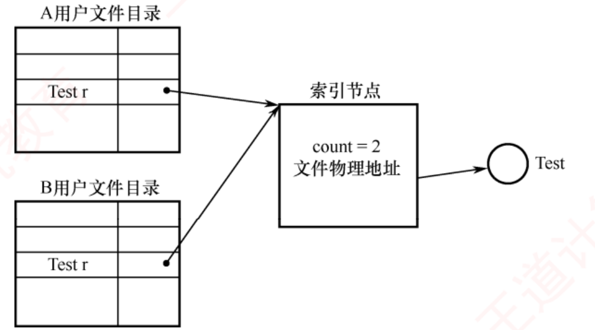
图 4.17（p.268）——A、B 两个目录里各有一个叫 Test 的目录项，两支箭头指向同一个 索引节点 ，节点里写着 count = 2。文件物理地址只存在这一处 。
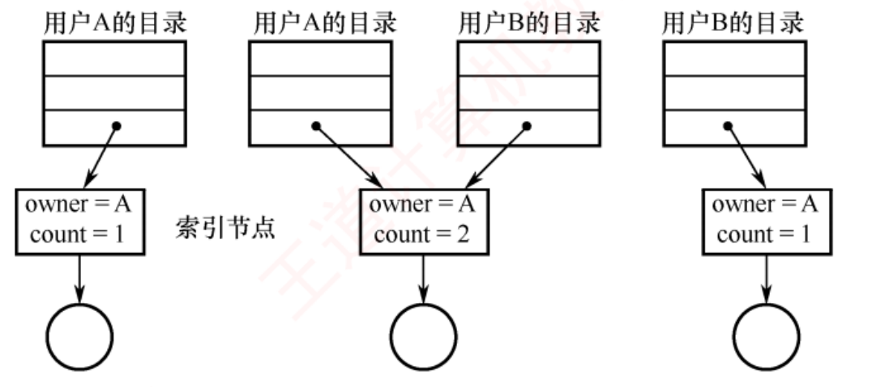
图 4.18（p.269）——三个快照：count=1（只有 A）→ count=2（A、B 都指）→ count=1（A 删了自己的目录项） 。⚠️ 看第三个快照里 owner 仍然是 A ——拥有者不随目录项删除而转移 ，这是一处极隐蔽的考点。
必记 · 硬链接的三条结论
① 文件的物理地址和属性信息不再存放于目录项中，而是集中存储在索引节点内；目录项仅包含文件名 + 指向索引节点的指针 。 ② 索引节点包含链接计数 count ，记录当前指向它的目录项数量 。 A 创建 ⟹ count = 1 且 A 为拥有者；B 共享 ⟹ count = 2，但拥有者仍为 A 。③ A 不能直接删除文件 ，而应仅删除自己的目录项，并将 count 减 1 。只要 count > 0，文件及其索引节点仍被保留；只有当 count = 0，系统才真正释放该文件及其索引节点。
2．利用符号链实现文件共享（软链接）
我的补讲 · 软链接的两条缺点，一条是时间成本、一条是空间成本，分别怎么被考
书上给了两条缺点，考法完全不同：
缺点 本质 怎么被考 ① 每次访问要逐级遍历目录 时间成本 「硬链接与软链接哪个查找快」⟹ 硬链接 （书上收口金句明说） ② 符号链接本身是独立文件，其 inode 也占磁盘 空间成本 「建一个软链接会多占几个 inode」⟹ 1 个 ；「建一个硬链接呢」⟹ 0 个 （只多一个目录项）
⚠️ 第 ② 条还能再深一层：路径字符串很短时，有些文件系统会把它直接塞进 inode 里（快速符号链接），连数据块都不占 ——
但这属于实现细节，考试按书上口径答"占用一定的磁盘空间"即可 。
⟹ 而软链接唯一无可替代的优势也很明确：能跨文件系统、能跨机器 （只需记录网络地址 + 路径名）。
「硬链接快但走不远，软链接慢但到得了」 ——这句话能概括本节全部对比。
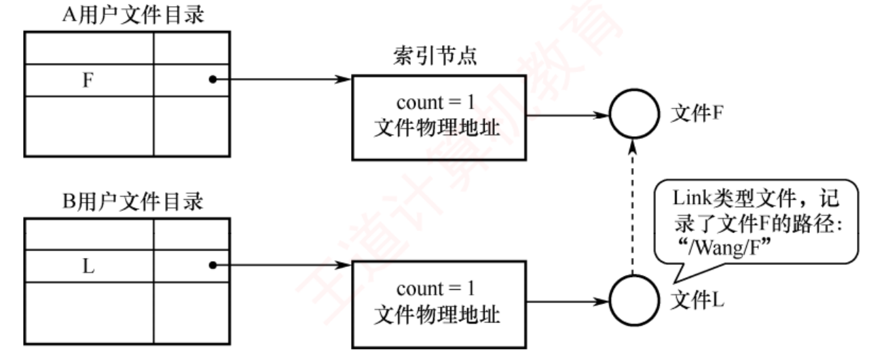
图 4.19 利用符号链的共享方式（p.269）——关键差别一眼可见：这里有两个 索引节点，两个 count 都等于 1 。B 目录里的 L 指向的是它自己的 inode，那个 inode 指向的文件 L 里装的只有一行字符串 "/Wang/F"（图中气泡）。指向文件 F 的那根线是虚线 ——虚线的意思就是「这不是指针，是一个待解析的路径名」。
必记 · 软链接的原理与两条缺点
系统创建一个 LINK 类型的新文件 L 写入 B 的目录，文件 L 仅包含被链接文件 F 的路径名 （类似 Windows 的快捷方式 ）。
B 访问 L 时，OS 识别其为 LINK 类型，便根据其中记录的路径名逐级查找 定位到 F。只有文件拥有者持有指向其索引节点的指针。其他共享用户仅保存该文件的路径名。
⟹ 即使拥有者删除了共享文件 F，也不会导致其他用户的指针悬空；其他用户访问时系统返回访问失败，此时可安全地删除该符号链接。 逐级遍历目录结构 ，可能涉及多次磁盘读取 ；② 符号链接本身也是一个独立文件，其索引节点同样占用磁盘空间 。利用符号链实现网络文件共享时，只需记录文件所在机器的网络地址及文件路径名 （硬链接做不到）。
我的补讲 · 软硬链接对照表（背这张表，本节四道真题全覆盖）
书上的收口金句：「文件共享，"软硬"兼施 」——但真题问的都是具体差别，一张表钉死：
问的是 硬链接 软链接 有几个 inode 1 个 （共享）2 个 （L 有自己的 inode）count 怎么变 建链接 +1，删链接 −1 恒为 1 ，建软链不影响原文件的 count目录项里存什么 文件名 + inode 号 文件名 + 它自己的 inode 号 （数据是路径串） 原文件被删后 照样能访问 （count 没到 0，文件还在）悬空，访问失败 能否跨文件系统 / 跨机器 ❌ 不能 （inode 号只在本文件系统内唯一）✅ 能 （存的是路径字符串）能否链接目录 ❌ 一般禁止 （会成环，引用计数解不开）✅ 可以 查找速度 快 （直接通过指针）慢 （要逐级解析路径）占额外磁盘空间 只多一个目录项 多一个 inode + 一个存路径的数据块
⟹ 一句总纲：硬链接是「同一个文件的第二个名字」，软链接是「一张写着地址的纸条」。
凡是拿不准的选项，把这句话代进去问一遍，八成就出来了。 陷阱 · 「删除」这个词在软硬链接下含义不同（2009/2021 反复考）
题目说「用户 A 删除了文件 F」，你必须先问：A 删的是目录项还是文件本体？ 硬链接场景 ：A 执行的 rm 只删自己的目录项 + count 减 1 。B 完全不受影响，甚至察觉不到 。文件本体活着，owner 依然显示 A 。软链接场景 ：A 删的是文件本体 （因为只有 A 有硬链接）⟹ 数据块和 inode 真的被回收 ⟹ B 的 L 变成悬空链接。⚠️ 再叠一层：软链接场景下如果被删的是 L 呢？ 那 F 毫发无伤——删纸条不影响地址上的房子 。
这四种组合（删 F / 删 L × 硬 / 软）就是本节所有判断题的全部素材。
📄 p.269
4.2.9 文件保护
我的补讲 · 「口令 / 加密 / 访问控制」三者的分工，用一张"防谁"的表分清
书上说前两者「主要用于防止他人非法获取或窃取文件内容」，后者「用于精细管理具体访问权限」 → 展开成表就再也不混：
手段 防的是谁 能区分读/写/执行吗 开销 存在哪 访问控制（ACL） 系统内的合法用户 （越权访问）✅ 能 ACL 表的空间 文件的 FCB / inode 口令 不知道口令的人 ❌ 不能 时空开销小 FCB （⚠️ 明文或弱保护，安全性较低 ）加密 绕过 OS 直接读盘的人 ❌ 不能 加解密的计算开销 不额外占元数据空间
⭐ 三者不可互相替代的理由一句话：访问控制管"能不能碰"，口令管"知不知道暗号"，加密管"碰到了也看不懂"。
⚠️ 最容易记错的一格是「加密存在哪」：不占元数据空间 （密文就是文件内容本身），
而口令是要存进 FCB 的——这正是口令"安全性较低"的原因（存在系统里就可能被读出来 ）。 考点追踪 · 文件访问控制表的结构（2017）
知识串联 · 精简 ACL 的「拥有者/组/其他」，就是 Linux 的 rwxr-xr--
连到实际系统 书上表 4.1 抽象成 3×4 的位矩阵，落到 Linux 上就是你见过无数次的九个字符：
Linux 显示 对应书上的 位 rwx（前三位）拥有者 读 1 写 1 执行 1 r-x（中三位）组 读 1 写 0 执行 1 r--（后三位）其他 读 1 写 0 执行 0
⚠️ 两处与书上不完全一样，考试按书上口径答即可，但知道差别有助于理解：Linux 只有 rwx 三种权限，书上表 4.1 列了「读/写/删除/执行」四种 ——
Linux 里"删除"权限其实由目录 的 w 位控制 ，这正好印证了 4.2.7 那条「删文件查的是目录写权限」；Linux 的 x 位对目录另有含义（能否进入该目录） ——所以书上才说「还必须提供专门的目录保护机制」。
⟹ 把抽象的位矩阵和 ls -l 的输出对上号，这一小节就再也不用背了。 必记 · 三种保护手段的分工
常见实现方式：口令保护、加密保护和访问控制 。
⭐ 口令与加密主要用于防止他人非法获取或窃取 文件内容，而访问控制则用于精细管理用户对文件的具体访问权限 。 口令与加密并不区分具体的访问操作类型 （如读/写、执行等），因此无法替代基于权限的访问控制机制，而应视为补充手段。
必记 · 六种受控访问类型
读 （读取数据）· 写 （写入或修改）· 执行 （加载到内存并运行）· 添加 （在末尾追加，不覆盖原有内容 ）· 删除 （移除并释放空间）· 列表清单 （列出目录中文件的名称及属性）。重命名、复制、编辑等高层操作通常由应用程序通过系统调用实现，真正的保护机制仅在底层提供。
⭐ 复制文件本质上是通过一系列"读"操作完成的；因此，用户只要拥有读权限，便隐含具备了复制和打印的能力。
我的补讲 · 「有读权限就等于有复制权限」这句话是一道送分判断题，也是一条安全原则
书上把它写成一句陈述 → 潜台词是权限系统只能管"能不能读到"，管不了"读到之后干什么" → 由此能推出三条：
推论 对错 理由 「可以只给读权限、禁止复制」 ✗ 复制 = 一串读；底层无法区分"读来看"和"读来存" 「可以只给读权限、禁止打印」 ✗ 同上 「加密能防住有读权限的人」 ✓ 这正是加密作为补充手段的价值 ——读得到密文，但没有密钥就看不懂
⟹ 这条也解释了「口令 / 加密 / 访问控制」三者为什么必须并存而不是三选一：访问控制管"谁能碰"，加密管"碰到了也没用" 。 必记 · 精简 ACL 与三类用户（2017 真题）
最普遍的机制是为每个文件和目录附加一个
访问控制列表（ACL） 。
⚠️ ACL 的缺点：
列表长度不可预知，可能带来复杂的空间管理开销 ⟹ 现代系统常采用
精简 ACL ，把用户划分为三类：
① 拥有者 （创建文件的用户）·
② 组 （需共享该文件且访问需求相似的用户）·
③ 其他 。
表 4.1 一个精简的访问控制列表 （每种访问类型用一个二进制位表示，
仅需一个 3×4 位的矩阵 ，表格重排不裁图）：
用户类型 读取 写入 删除 执行 拥有者 1 1 1 1 组 1 0 0 0 其他 0 0 0 0
创建文件时，系统将文件拥有者的用户名及其所属组名记录在该文件的 FCB 中。
访问时按优先级顺序匹配身份：拥有者 → 同组 → 其他。 陷阱 · 「权限位串属于文件 不属于用户 」——2017 那道题栽的人极多
题目给「4 种访问类型、5 类用户」，问权限位串多长。正确答案是 4 × 5 = 20 位 ，不是 5 位也不是 4 位。 错因是把「一个用户对这个文件的权限」当成了整张表。正确的读法是：这张表是挂在文件上的 ，它必须为每一类用户 各留一行 。 ⟹ 记法：ACL 的规模 = 用户类数 × 访问类型数 ，两个维度都要乘进去。
书上表 4.1 是「3 类用户 × 4 种类型 = 12 位」，把 3 和 4 换成题目给的数即可。
知识串联 · ACL 的两个方向：访问控制表 vs 访问控制矩阵 vs 能力表
连到 ch1 / 保护机制 同一份权限信息有两种切法，考试爱问「按谁组织」：
组织方式 按什么切 存在哪 回答哪个问题快 访问控制表 ACL 按文件（列） 挂在文件的 FCB / inode 上 「谁能访问这个文件 」 能力表（Capability List） 按用户（行） 挂在用户/进程上 「这个用户能访问哪些文件 」 访问控制矩阵 完整二维表 — 都快，但太稀疏、太占空间
⟹ 这是典型的「同一份数据，按行存还是按列存」问题，与数构里稀疏矩阵的三元组存储 、
ch3 里页表（按进程组织）vs 反置页表（按页框组织） 是同一种权衡。选哪种，取决于你最常问哪个方向的问题。 📄 p.271
4.2.10 本节小结 —— 开头三问的答案
知识串联 · 本节 15 页正文，与 ch2/ch3 的三处"同题异构"，考前扫一眼
承 ch2 · ch3 把本节的核心机制横向摆开，每一个在前两章都有对应物：
本节 ch2 进程 ch3 内存 共同点 inode （文件的元数据）PCB （进程的元数据）页表（地址空间的元数据） 本体与描述分离，描述里存"在哪" 系统 / 进程两级打开文件表 系统进程表 / 进程自己的资源表 页表基址在 PCB、页表本体在内存 全局共享的部分与进程私有的部分分开 硬链接 count 共享内存段引用计数 写时复制的页面引用计数 「还有人指着就不能删」 混合索引分四段 — 多级页表 / 段页式 按规模分层，常见情况走快路
⟹ 复习到本节时，如果哪一格答不上来，说明前面那一章也没吃透 ——回头补比硬记本节划算。 必记 · 三问的标准答法（第 3 问是本章最值得背的一段）
1）目录管理的基本要求 ：① 实现"按名存取"（最基本的功能）② 提高目录检索速度 ③ 为支持安全共享，目录需提供访问控制信息 ④ 支持重名。2）目录中查找文件的方法 ：线性列表法 （若文件名有序则可折半查找，但插入新文件需维护有序性，带来额外开销 ）· 哈希表法 （查找迅速，但需妥善处理哈希冲突）。3）单个文件的逻辑结构与物理结构之间是否存在制约关系？ 二者虽无直接制约关系 ，但若物理结构选择不当，则难以体现逻辑结构的特点 。 书上的例子：一个逻辑上为顺序结构的文件，若采用隐式链接 的物理结构，即使理论上能快速定位某条记录，实际仍需在磁盘上逐块查找。
我的补讲 · 第 3 问怎么答满分：先给判断，再给反例，最后回扣
这是一道典型的「问关系」题，答案分三层，缺一层扣一层：
层 要写什么 写法示例 ① 判断 无直接制约 「逻辑结构由用户需求决定，物理结构由文件系统针对硬件特性决定，二者可以自由组合，不存在直接制约 。」 ② 但书 选择不当会抵消逻辑结构的优势 「但物理结构若选择不当，逻辑结构的优势将无法体现。」 ③ 反例 顺序文件 + 隐式链接 「例如顺序文件本可按偏移量直接定位第 i 条记录，但若物理上采用隐式链接，仍须从首块逐块跟指针，随机访问退化为顺序访问 。」
⭐ 想再加一分，可以补一个反向 的例子：散列文件（逻辑上 O(1)）若物理上采用连续分配，反而配合得很好 ——
因为散列算出的地址正好可以直接映射成盘块偏移。说明"不当"是具体组合的问题，不是"物理结构限制了逻辑结构"。 知识串联 · 王道自己给本章下的定性：文件就是一个抽象数据类型
连到数构 ch1 书上小结的收口原话：
「本章所学的"文件"，实质上是一种抽象数据类型 ，即一种数据结构。
若读者在此之前已学完数据结构，则面对新数据结构时，自然会关注其逻辑结构、物理结构及所支持的操作 。」
⟹ 这句话给了整章一个复习框架，考前一天可以拿它当提纲自测：
数构三件套 本章对应 在哪一节 逻辑结构 无结构 / 顺序 / 索引 / 索引顺序 / 散列 4.1.3 物理结构 连续 / 链接（隐式、显式 FAT）/ 索引（单级、多级、混合） 4.2.6 支持的操作 create / delete / open / read / write / close 4.2.7 （多了一件）多个实例怎么组织 目录结构 4.2.3
⟹ 能把这四行默出来，本节 15 页正文就算过关了。 📄 p.294
4.3 文件系统 ← 10 页 · 6 道真题 · 0 道综合真题；除 4.3.2 外全是 2022 新增大纲考点
我的补讲 · 本节和 4.2 的分工：4.2 管"文件占了哪些块"，4.3 管"哪些块还空着"
4.2.6 开头那句「两个互补视角」是整章的结构线 → 到了 4.3 才补上另一半 → 用一张图式对照锁死：
4.2.6 文件分配方式 4.3.2 文件存储空间管理 管的是 非空闲块 （已被文件占用的）空闲块 （还没被占用的）数据结构挂在哪 每个文件各一份 （索引块 / 目录项）全盘一份 （位示图 / 空闲表 / 空闲盘块号栈）典型问题 「文件的第 i 块在哪」 「给我一个空闲块」「回收这一块」 ⭐ 交集 FAT 一张表同时干了两件事 （−2 表空闲）——这正是它独一无二的地方
⟹ 记住这条分工，就不会犯本章最常见的一类概念错：把「索引分配」当成一种空闲空间管理方法 ，
或者把「位示图」当成一种文件物理结构 。两者一个管"已用"，一个管"未用"，从来不是一个维度。 必记 · 王道对本节的定性（原文，决定了本节该怎么读）
「本节除"外存空闲空间管理 "外，其余内容均为 2022 年统考大纲新增考点 。这些内容较为抽象，属于"看不见、摸不着 "的底层原理，在常见的国内《操作系统》教材中鲜有涉及。」 4.3.1 文件系统布局 / 4.3.3 虚拟文件系统 / 4.3.4 文件系统挂载 = 2022 新增考点 ，2025 已经开始考 （选 18 考 VFS）。
我的补讲 · 本节的 6 道真题分布，说明了两件相反的事
我把 4.3 的 6 道真题按小节摆开，结论有点反直觉：
小节 页数 真题 题型 4.3.1 布局（2022 新增 ） 2 0 — 4.3.2 存储空间管理 （老考点 ）4 5 （2014/2015/2019/2023/2024）全是选择题，4 道是位图计算 4.3.3 VFS（2022 新增 ） 2 1 （2025）概念辨析 4.3.4 挂载（2022 新增 ） 1 0 —
① 眼下的重心毫无疑问是 4.3.2 ：4 页装下 5 道真题，而且题型高度固定（位示图换算 + 四种方法辨析）。
② 但 不能因为 4.3.1/4.3.4 还没考过就跳 ：2022 才进考纲，2025 就考了 VFS ——
新考纲条目的兑现节奏是「进纲后 2~4 年内必考一遍」 （对照 ch3 的「页框回收」「内存映射文件」2025 进纲当年即考）。
4.3.1 的引导流程和 4.3.4 那句加粗的"同一挂载点同一时刻只能挂一个设备"，是明摆着的下一道题 。 4.3.1 文件系统布局
1．文件系统在磁盘中的结构
背景 · 分区表与活动分区的细节（知道 MBR 在 0 号扇区即可，其余不用背）
MBR 后紧随的分区表记录各分区的起始与结束地址 并标记一个活动分区 ；BIOS 把 MBR 读入内存执行，MBR 找到活动分区后读它的第一个扇区。
这些细节 ch1 1.5 已经讲过一遍，本节只是换个角度重述 ——考点只有「MBR 在 0 号扇区、每个分区都有引导块」这两句，其余读一遍即可 。
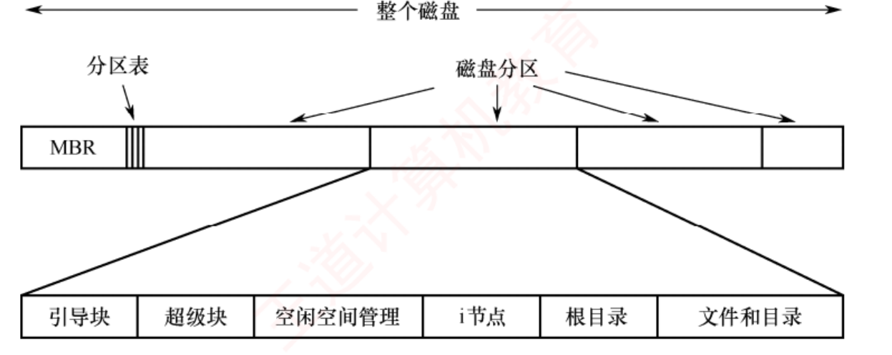
图 4.20 一个可能的文件系统布局（p.294）——上下两条，分别是两个层次 ：上面一条是整个磁盘 （最左的 MBR + 紧随其后的分区表 + 若干磁盘分区），下面一条是把其中一个分区放大 （引导块 → 超级块 → 空闲空间管理 → i 节点 → 根目录 → 文件和目录）。⚠️ MBR 只有一份、在整盘的最前面；引导块每个分区都有一份 ——这两者的层次差别是本小节唯一的记忆点。
必记 · 六个组成部分（按启动顺序读，比按图顺序读好记）
组成 说明 主引导记录 MBR 位于磁盘的 0 号扇区 。MBR 后紧随一个分区表 ，记录各分区的起始与结束地址 ，并标记其中一个为活动分区 。加电后 BIOS 将 MBR 读入内存并执行；MBR 首先识别活动分区，随后读取该分区的第一个扇区，即引导块 引导块 boot block 由其负责加载并启动该分区中的操作系统 。⚠️ 每个分区均以引导块开头，即使当前未安装可启动的操作系统也保留此区域 。Windows 中称分区引导扇区 超级块 super block 存储文件系统的所有关键信息 。系统启动或首次挂载该文件系统时，超级块会被读入内存 。典型内容：分区的总块数、块大小、空闲块数量及其指针、空闲 i 节点数量及指针 空闲块信息 记录未分配的磁盘块，通常以位示图或空闲链表 实现 i 节点区 每个文件对应一个 i 节点 根目录 / 文件和目录 根目录是整个目录树的起点；其余空间存放实际数据
⭐ 记忆链：
加电 → BIOS → MBR（0 号扇区）→ 分区表找活动分区 → 该分区第一个扇区＝引导块 → 引导块加载 OS 。
知识串联 · 这条启动链就是 ch1 的「操作系统引导」，两处必须合起来看
承 OS ch1 1.5 ch1 讲的引导流程是：
激活 CPU → 执行 ROM 中的 BIOS 自检 → 加载带有操作系统的硬盘 → 加载主引导记录 MBR →
扫描分区表找活动分区 → 加载分区引导记录 PBR → 加载启动管理器 → 加载操作系统 。
本节从磁盘布局 的角度把同一条链再讲一遍：ch1 讲「先做什么后做什么」，本节讲「这些东西分别躺在盘上哪个位置」。
ch1 的说法 本节的说法 在盘上哪 主引导记录 MBR MBR + 分区表 整盘 0 号扇区 分区引导记录 PBR 引导块 boot block 各分区的第一个扇区 启动管理器 / OS 初始化 超级块被读入内存 引导块之后
⟹ 两节合起来，就能回答一道很可能出的题：「为什么每个分区都要有引导块，哪怕没装系统？」
答：布局要统一 ——分区的后续结构（超级块、i 节点区…）的偏移量都是从引导块之后算起的，
少一块就要为每种情况写不同的定位逻辑。这与组原里"指令定长便于取指"是同一种工程理由。 2．文件系统在内存中的结构
知识串联 · 「挂载时加载、卸载时释放」＝ 打开/关闭 ＝ 进程创建/撤销，同一条生命周期
承 ch2 · 本章 4.2.7 408 里凡是"内存中的表"，都遵循同一条生命周期：
内存结构 什么时候建 什么时候销 挂载表 / 目录项缓存 / 超级块副本 文件系统挂载时 卸载时 系统打开文件表项 第一个进程 open 时 最后一个进程 close 时（计数归零） 进程打开文件表项 本进程 open 时 本进程 close 或进程终止时 PCB（ch2） 进程创建时 进程撤销时 页表（ch3） 进程创建时 进程撤销时
⟹ 五行共用一句话：「资源在第一次被用到 时建表，在最后一个使用者离开 时销表。」
而"最后一个使用者离开"怎么判断？——靠计数器 。至此，本章的四个计数器（4.2.2 那张表）就全部串起来了。 必记 · 内存中的四组结构
这些信息在文件系统挂载时加载 ，在运行期间动态更新，并在卸载时释放 。 ① 内存中的挂载表（mount table） ：记录每个已挂载分区的设备标识、挂载点、文件系统类型及挂载选项 ；② 内存中的目录项缓存 ：缓存最近访问过的目录内容，加快路径解析；③ 系统级的打开文件表 ：为每个当前打开的文件维护一个 FCB 的副本 ；④ 进程级的打开文件表 ：包含该进程的文件描述符及指向系统级表项的指针 。
陷阱 · ⚠️ 这一段与 4.2.7 口径冲突，考试以 4.2.7 为准
书上在③里把「读/写指针」写进了系统级打开文件表 ，这与 4.2.7 及 2017 选 61 / 2020 选 64 的解析正好相反 。 📌 一律以 4.2.7 与真题解析为准：读/写指针在进程（用户） 打开文件表 。 这是本章唯一一处教材内部自相矛盾的地方，我在题库的选 61 核对栏里也标了。
遇到教材内部冲突，判据只有一条：以真题解析的口径为准 ——考的是真题不是教材。
📄 p.295
4.3.2 文件存储空间管理 ⭐ 本节唯一的重心：4 页 5 道真题
考点追踪 · 磁盘空闲块管理的方法及特点（2019、2024）· 位示图的应用及相关计算（2010、2014、2015、2023）
我的补讲 · 四种空闲空间管理方法，考试只问三个维度
2019 与 2024 两道真题分别从两个角度切，把三个维度备齐就能全覆盖：
维度 空闲表法 空闲盘块链 空闲盘区链 位示图 成组链接法 结构大小随空闲块数变吗 ✅ 变 ✅ 变 ✅ 变 ❌ 不变 （只看总块数）✅ 变（组数变） 便于连续分配吗 ✅ 最便于 ❌ ✅ ✅ （找连续的 0 很快）❌ 适合大型文件系统吗 ❌ ❌ ❌ ❌（盘大则图大） ✅ UNIX 采用
⟹ 2024 选 17 问第一行、2019 选 15 问的是「FAT 能不能兼任」。这张表把两题都覆盖了。
⚠️ 一个容易混的点：位示图"结构大小不变"是优点还是缺点？——两面都是。
空闲块少时它不会膨胀（优点）；但盘一大它就固定占那么多（缺点） 。
书上写的缺点「随磁盘容量增加而增大」说的正是后一面。 必记 · 四种方法的一句话画像
方法 结构 本质 适用 空闲表法 一张表，每项＝序号 + 第一个空闲盘块号 + 空闲盘块数 ，按起始盘块号递增排列 连续分配 ，思想源于内存动态分区分配 小文件（1~5 块） 空闲盘块链 以单个盘块 为节点的链 链首取、链尾插 分配回收单块极简单，但链太长 空闲盘区链 以空闲盘区 为节点，每节点存盘块数 + 下一区指针 首次适应；回收要判相邻并合并 与盘块链优缺点恰好相反 位示图法 m×n 位的二维位阵，0＝空闲、1＝已分配 按盘编号的位阵 小型或中等规模系统 成组链接法 分组（每组 100 块）+ 每组首块当索引块 + 链接 UNIX 采用，融合表法与链表法 大型文件系统
⚠️ 空闲表法与空闲链表法均
不适用于大型文件系统 ，因其管理结构随磁盘容量增大而
过度膨胀 。
背景 · 两种空闲链表的操作细节（考的只是"两者优缺点相反"这一句）
空闲盘块链 ：分配从链首 摘、回收插链尾 ；单块操作极简单，但链太长、管理开销大 。空闲盘区链 ：每个节点存盘块数 + 下一区指针 ；分配用首次适应，回收要判相邻并合并 ；链短、效率高，但过程复杂 。书上原话：「优缺点与空闲盘块链恰好相反」——考试只考这一句，两者的具体插删位置不必背 。
知识串联 · 空闲表法与空闲盘区链，就是 ch3 动态分区分配原封不动搬到磁盘上
承 ch3 3.1.2 书上明写「思想源于内存的动态分区分配」 ，所以 ch3 的整套结论可以直接复用：
ch3 内存动态分区 本节磁盘空闲空间 空闲分区表 / 空闲分区链 空闲表法 / 空闲盘区链 首次适应、最佳适应、最坏适应、邻近适应 同样用首次适应、最佳适应 （书上点名）回收时判前邻/后邻/前后皆邻/都不邻四种情形并合并 一字不差 ：「判断回收区是否与相邻的前区或后区物理连续，若相邻则合并」会产生外部碎片 同样产生外部碎片
⟹ ch3 那 84 道内存管理题里练过的「四种情形合并」，本节一题不用重学。
唯一的差别是介质：内存里合并只是改表，磁盘里合并同样只是改表——都不需要搬数据。 3．位示图法 ← 4.3 的 5 道真题里有 4 道出自这里
我的补讲 · 位示图题的五步固定流程（四道真题通用，抄在草稿纸上）
位示图是 4.3 唯一的计算点，四道真题解法完全一致：
步 动作 典型坑 ① 写下"本题从 __ 起编号" 不写这一步，后面全废 ② 确定 n（每行/每字的位数） 「字长 32 位」「每行 16 位」是同一个 n，说法不同 ③ 套公式：从 1 起 b = n(i−1)+j ；从 0 起 b = n·i+j 反向题用 DIV / MOD，同样分两套 ④ 若题干出现"字节/字/B"，再除一次 8 ⭐ 2015 选 14 的全部难度在这一步 ⑤ 分配置 1、回收置 0 ⚠️ 别把 0/1 的含义记反：0＝空闲、1＝已分配
🐍 我把综 01 的「位示图 ↔ 柱面/磁头/扇区（C/H/S）」双向公式对 16000 个盘块做了全枚举往返验证，失配 0 处 ：
b = C×20×8 + H×8 + S · i = b/16 · j = b%16 （该题从 0 起 编号）
⟹ 这类题的通式：先把物理坐标（C/H/S）压成一维块号 b，再把 b 展开成位示图坐标 (i, j) ——
中间的 b 是唯一的桥，两头的公式各管一段，别想着一步到位。 必记 · 位示图的两套公式（⚠️ 编号起点决定用哪一套）
一个由
m×n 位 组成的位示图，恰好可描述 m×n 个盘块。
0 = 空闲，1 = 已分配。
【书上的口径：行、列编号从 1 开始】
分配 ：找到值为 0 的位，设在第 i 行第 j 列，每行 n 位 ⟹ b = n(i − 1) + j ，再置 map[i, j] = 1回收 ：i = (b − 1) DIV n + 1 ， j = (b − 1) MOD n + 1 ，再置 map[i, j] = 0
📌
书上【注意】框：本书中位示图的行和列均从 1 开始编号。若题目指定从 0 开始，则上述公式需要相应调整。
【从 0 起编号】 b = n·i + j ， i = b DIV n ， j = b MOD n
✅ 优点：
查找高效，便于实现连续分配 ；
结构紧凑、占用内存极小，可常驻内存 。
⚠️ 缺点：
位示图大小随磁盘容量增加而增大 ，更适用于
小型或中等规模的系统 。
我的补讲 · ⚠️ 两套公式的四道真题正反各两道——先写起点，再动笔
王道那个【注意】框不是随口一提：本章位示图共四道题，从 1 起和从 0 起正好各两道 ：
题 编号起点 该用的公式 4.3 选 10 · 综 02 从 1 起 （"第 18 个字的第 16 位"）b = n(i−1) + j 4.3 选 14（2015 真题）· 综 01 从 0 起 b = n·i + j
⭐ 一个自检小技巧：把 i = 1（或 0）、j = 1（或 0）代进去，看算出的 b 是不是"第一块"的编号 。
验证从 1 起：b = n(1−1) + 1 = 1 ✓（第一块编号 1）；验证从 0 起：b = n·0 + 0 = 0 ✓（第一块编号 0）。
这个代入只要 5 秒，却能挡住本章最高频的一类错 。
⚠️ 另一个必查项：「字长 n」有时用「每行位数」表述，有时用「每个字的位数（如 32 位机）」表述 ——
它们是同一个 n，但题目会用不同的词，读题时圈出来。 必记 · 图 4.21 位示图示意（16×16，dpi 420 逐位复核过，表格重排不裁图）
下面是书上图 4.21 的
前 3 行 （
1 = 已分配 ·
0 = 空闲 ）：
行\列 1 2 3 4 5 6 7 8 9 10 11 12 13 14 15 16 1 1 1 0 0 0 1 1 1 0 0 1 0 0 1 1 0 2 0 0 0 1 1 1 1 1 1 0 0 0 0 1 1 1 3 1 1 1 0 0 0 1 1 1 1 1 1 0 0 0 0
练手：第 3 行第 4 列是 0（空闲），n = 16 ⟹ 该块的盘块号 b = 16 × (3 − 1) + 4 = 36 。 陷阱 · ⚠️⚠️ 「位号」vs「块内字节序号」——2015 选 14 的 C 与 A/B 之争全在这
题目问「某盘块号在位示图的第几个字节的第几位」时，有两层取整，一步都不能省：
步 算什么 公式 ① 盘块号 → 位序号 位序号 = 盘块号（每块一位，一一对应） ② 位序号 → 第几个字节 字节号 = 位序号 DIV 8 （再除一次 8 ）③ 位序号 → 字节内第几位 位号 = 位序号 MOD 8
⟹ 错法就是漏掉第 ② 步的那次 ÷8 ，直接把盘块号当字节号报出去。
A/B 两个干扰项正是这么造出来的：一个漏了 ÷8，一个 ÷8 后取整方向错了。
⚠️ 判别句：题干出现「字节」「字」「B」就一定还要再除一次；只出现「位」「bit」就不用。 我的补讲 · 位图大小怎么算（2024 选 17 与 2016 那类题的共同底座）
位示图的大小只有一个决定因素，这句话本身就是一道真题的答案：
位示图大小 = 磁盘总块数 ÷ 8 字节 ⟸ 只与总块数有关，与空闲块数无关
方法 管理结构的大小取决于 随空闲块数变化吗 位示图 磁盘总块数 ❌ 固定不变 空闲表法 空闲区的个数 ✅ 变 空闲盘块链 空闲块 数 ✅ 变 空闲盘区链 空闲区 数 ✅ 变
⟹ 这就是 2024 选 17 的全部内容：四选一，选那个"不随空闲块数变化"的 。
🐍 顺手算一个：磁盘 2²² 个盘块 ⟹ 位示图 = 2²² bit = 2¹⁹ B = 512KB 。
可见位示图确实"占用内存极小"（512KB 管 2²² 块，若块 4KB 即管 16GB 磁盘）——但盘一大它也会跟着涨，这正是它的缺点 。 4．成组链接法
我的补讲 · 成组链接法的两个操作，各有一个"临界时刻"，考的就是那一刻
正常分配/回收都很平淡，题目一定卡在栈空和栈满这两个临界点上 ：
时刻 正常情况 ⭐ 临界情况 分配 栈顶取一个块号，栈中空闲块数 −1 栈指针到达栈底 （本组只剩最后一块）⟹ 先把该块的内容读入栈（更新为下一组），再把这一块本身分配出去 回收 块号压栈顶，栈中空闲块数 +1 栈已满（100 项） ⟹ 把栈中全部块号写入这个新回收的块，让它成为新索引块；该块号设为新栈底，栈中空闲块数重置为 1
🐍 书例的顺序值得逐字读：「先依次分配 201~299；当需要分配 300 时，首先将其内容读入空闲盘块号栈，随后将 300 号盘块本身分配给用户。」
——顺序不能颠倒 ：若先分配出去再读，那块的内容（下一组的块号列表）就丢了，整条空闲链断裂 。
⚠️ 回收的临界情况同理：必须先把栈内容写进新块，再把它当栈底 。
两个操作的临界处理都是"先保存旧信息，再改用途" ——这与 ch2 里进程切换"先保存现场再装入新现场"是同一条铁律。
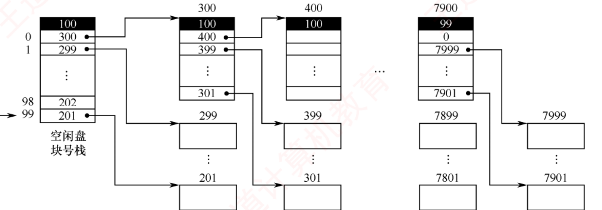
图 4.22 成组链接法示意图（p.297）——全章最难看懂的一张图，看懂只需抓住三点 ：① 最左边那一列是内存里的 「空闲盘块号栈」 ，栈顶写着 100（＝本组还有几块），下面依次是 300、299、…、201；② 栈底那一格 201 上面的黑框 100 是"数量"不是块号 ；③ 每组的第一个盘块 （300、400、…、7900）被拿来当索引块用 ，里面装下一组的块号列表。⚠️ 看最右边 7900 号块：数量写的是 99，且第一个块号是 0 ——那个 0 就是整条空闲链的结束标志 。
必记 · 成组链接法的分组规则与两个操作
核心思想 ：将所有空闲盘块划分为若干组（例如每组 100 个盘块）。除最后一组外，每组的第一个盘块用作索引块 ，记录下一组 中所有空闲盘块的块号及其数量；这些索引块依次链接成一条链。
文件系统挂载时，第一组的空闲盘块信息被预先加载到内存的「空闲盘块号栈」。 书例 ：空闲区为 201~7999 ⟹ 第一组 201~300 、……、次末组 7801~7900 、最末组 7901~7999（共 99 块） ；
最末组的块号由前一组的最后一个盘块（7900 号）记录，而该盘块中存放的第一个盘块号为 "0"，用作整条空闲链的结束标志。 分配 ：从栈顶 取一个盘块号分配，栈指针上移，空闲盘块数减 1 。
⚠️ 若栈指针到达栈底（当前组已分配完毕），则先读取该栈底盘块号对应的物理盘块内容（＝下一组的块号列表）整体读入栈以更新，再将原栈底所指的盘块分配出去 。
🐍 书例：先依次分配 201~299 ；当需要分配 300 时，首先将其内容读入栈，随后将 300 号盘块本身分配给用户 。回收 ：将释放的盘块号压入栈顶 ，栈指针下移，空闲盘块数加 1 。
⚠️ 若栈已满（如达到 100 项），则将当前栈中的全部盘块号写入该新回收的盘块 ，使其成为新的索引块；随后将该盘块号设为新的栈底，并将栈中空闲盘块数重置为 1。
我的补讲 · 🐍 把 201~7999 的分组算一遍，就知道那个「99 块」是怎么来的
书上直接给「最末组 7901~7999 共 99 块」 → 潜台词是这个数是算出来的，不是设定的 → 验算一遍，以后这类题就能自己推：
空闲块总数 = 7999 − 201 + 1 = 7799 ⟹ 7799 = 77 × 100 + 99
⟹ 77 个满组（每组 100 块）+ 1 个只有 99 块的末组 ，与书上"最末组共 99 个盘块"精确吻合。
分别验证边界：第 1 组 201~300 ✓；第 77 组（＝次末组）201 + 76×100 = 7701 起，到 7800？不对 ——
⚠️ 这里有个容易算错的地方：书上说次末组是 7801~7900 ，说明满组共有 78 组 （201~300 是第 1 组，7801~7900 是第 78 组），
7799 = 78 × 100 − 1 ⟹ 前 77 组满 100 块（201~7900 共 7700 块） ，
再加末组 7901~7999 的 99 块，合计 7700 + 99 = 7799 ✓。
⟹ 教训：做这类分组题一定要用「总数守恒」验一遍 ，光数组号极易差一组。 知识串联 · 成组链接法 ＝ 栈 + 索引 + 链表，三种数构一次用全
连到数构 这个结构值得单独拆一遍，因为它是本章唯一把三种数构揉在一起的机制：
成分 数构里叫什么 为什么用它 空闲盘块号栈 栈（LIFO） 分配取栈顶、回收压栈顶 ⟹ O(1) ；且刚回收的块马上被分配出去，局部性好 每组首块记下一组的块号列表 索引 一次读盘就拿到 100 个块号，而不是跟 100 次指针 索引块之间依次链接 链表 组数不限 ⟹ 磁盘再大也不膨胀
⟹ 一句话总结它凭什么适合大型文件系统：「内存里只放一组（100 个块号），其余全在盘上按需读入。」
对比 FAT 要把整张表常驻内存 —— 这正是成组链接法与 FAT 最本质的差别 ，也是 UNIX 选它的理由。
连到 ch3 「常驻一小部分、其余按需调入」正是虚拟内存 的思想 ——空闲盘块号栈就是空闲块信息的"工作集"。
必记 · 超级块与一致性（本节最后一句，常被忽略）
描述空闲空间的数据结构（如空闲盘块号栈）以及文件系统的关键信息，通常存储在磁盘的固定位置。在 UNIX 系统中，这一区域称为超级块 。
文件系统挂载时会将其读入内存，并在运行过程中持续维护内存副本与磁盘副本的一致性 。
📄 p.298
4.3.3 虚拟文件系统 VFS ← 2022 新增考点，2025 已开考
考点追踪 · 虚拟文件系统的原理与特点（2025）
我的补讲 · VFS 四个对象，用「它对应磁盘上的什么」一列就能全部分清
四个对象名字都很抽象 → 但只要问一句「它在磁盘上有没有对应物」，四个立刻分成两类：
对象 磁盘上有对应物吗 对应谁 生命周期 超级块对象 ✅ 有 磁盘上的超级块 挂载时建，卸载时销 V 节点对象 ✅ 有 具体文件系统的 inode （但不等同 ）文件首次被访问时建，引用计数归零时销 目录项对象 ❌ 没有 VFS 解析路径时动态生成的内存缓存 纯缓存，可随时丢弃 文件对象 ❌ 没有 一个进程打开该文件的运行实例 open 时建，close 且引用计数归零时销
⟹ 这一列直接回答了 2025 那道题里最难的一个干扰项：「VFS 占用磁盘空间」——错 ，
因为四个对象里有两个在盘上根本没有对应物，另两个也只是盘上结构在内存里的映像 。
⭐ 顺带一条对照：「文件对象 : V 节点 = 进程打开文件表项 : 系统打开文件表项」 ——
VFS 的四对象模型就是 4.2.7 那两级表的面向对象版本 ，前者是抽象设计，后者是具体实现。
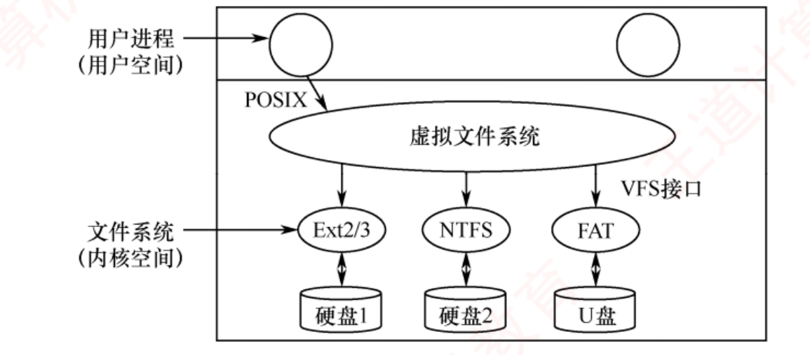
图 4.23 虚拟文件系统的示意图（p.298）——上下两个大方框就是用户空间和内核空间的分界 。用户进程通过 POSIX 接口只跟中间那个椭圆「虚拟文件系统」说话；VFS 再通过 VFS 接口 分发给 Ext2/3、NTFS、FAT 三个具体文件系统，各自管一块盘。⭐ 整张图想说的一句话：换掉下面任何一个椭圆，上面的用户进程一行代码都不用改 。
必记 · VFS 的动机与四种对象
动机 ：ext4、NTFS、FAT 等在
磁盘组织方式、元数据格式和操作方法 上各不相同；VFS
位于用户程序与具体文件系统之间，向上提供统一的文件操作接口 。
VFS 采用
面向对象 的设计思想，把公共特性
封装为四种对象 。
每个对象都包含数据成员和一组操作函数指针，这些函数由具体的文件系统提供。
对象 表示什么 关键点 超级块对象 一个已挂载的文件系统 对应磁盘上的超级块；挂载时 VFS 将其读入内存并创建对象 V 节点（vnode）对象 内存中的一个具体文件或目录 ⭐ VFS 中最重要的抽象对象 ；关联底层的 inode，是对各类文件系统元数据的统一封装 ；仅在文件首次被访问时动态创建于内存，引用计数归零后自动释放 目录项对象 路径中的一个组成部分 （如 /home/user/file 中的 user）并不直接对应磁盘上的固定结构，而是 VFS 解析路径时动态生成的内存缓存 ；VFS 靠缓存它加快路径查找文件对象 一个进程所打开的文件 （"文件在进程中的运行实例"）保存当前读/写位置、访问模式、引用计数 ；open 时创建，close 且引用计数归零时销毁
📌
【注意】框：V 节点并不等同于 磁盘上的 inode。V 节点是 VFS 为统一管理各类文件而创建的内存对象 ，它与 inode 通过指针关联：V 节点提供统一接口，inode 提供实际存储信息。 我的补讲 · 2025 那道题的四个选项，其实是四条独立结论，逐条钉死
王道在本节末尾写了一句总结，它就是 2025 选 18 的标准答案来源 （原文）：
「VFS 本身并不是一种真正的文件系统——它仅存在于内存之中，不占用磁盘空间，随系统启动而建立，随系统关闭而释放。 」
说法 对错 依据 VFS 是一种文件系统 ✗ 「并不是一种真正的文件系统」 VFS 占用磁盘空间 ✗ 「仅存在于内存之中，不占用磁盘空间」 VFS 能提高文件访问速度 ✗ 它只做分发 ；提速的是它顺带做的目录项缓存，不是 VFS 本身 VFS 可以管理网络文件系统（如 NFS） ✓ 只要实现了 VFS 定义的接口，就能被识别、挂载并使用 ——不要求它在本地磁盘上
⟹ 记法：「VFS 是一层接口 ，不是一层存储 。」 凡是把它当"存储"来描述的选项（占磁盘、存数据、提速）一律错。
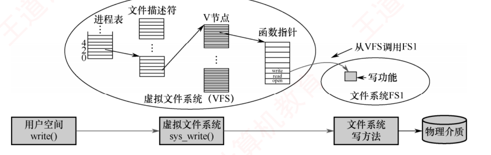
图 4.24 write() 系统调用操作示意图（p.299）——下面那条横向的四格流水线是主线 ：用户空间 write() → 虚拟文件系统 sys_write() → 文件系统写方法 → 物理介质。上面那个大椭圆是把中间一步放大 ：进程表里的 fd（0/2/4）→ 文件对象 → V 节点 → V 节点里的函数指针表（write/read/open）→ 从 VFS 调用 FS1 的写功能 。⭐ 整个机制的枢纽就是那张函数指针表 ——换个文件系统，就换一套指针，上层调用方式一字不改。
必记 · write() 的 VFS 工作过程（四步）
① 内核进入 VFS 层，执行 sys_write() 函数 ；② 根据文件描述符 fd 定位到对应的文件对象 ，并通过该对象获取其关联的 V 节点 ；
③ VFS 利用 V 节点中预置的写操作函数指针 ，调用目标文件系统的具体写方法；④ 该文件系统将数据写入缓冲区，最终通过设备驱动完成磁盘写入。
知识串联 · VFS 的「函数指针表」＝ 面向对象的虚函数表 ＝ 设备独立性 ＝ 中断向量表
跨科枢纽 · 用一张指针表实现"同名不同实现"
场景 那张表叫什么 换实现时改什么 本节 VFS V 节点里的操作函数指针 换一套指针 ⟹ 上层不动 OS ch5 设备管理 设备驱动接口 / 设备独立性软件 换驱动 ⟹ 上层不动（逻辑设备名 → 物理设备 ） 组原 ch7 中断 中断向量表 换服务例程 ⟹ 硬件不动 C++/Java 虚函数表 vtable 换派生类 ⟹ 调用点不动
⟹ 这四处是同一个机制的四个名字。「vnode : inode ＝ 逻辑设备 : 物理设备」 这个类比尤其好用——
都是"上层用统一的抽象名，下层各自实现" ，也都因此获得了同一个好处：可替换性 。 📄 p.299
4.3.4 文件系统挂载 ← 2022 新增考点，尚未考过
知识串联 · 挂载 ＝ 把两棵树接成一棵树，这是数构「树的合并」在 OS 里的实例
连到数构 ch5 挂载做的事，用数构语言说就是：把设备 B 的目录树，接到设备 A 目录树的某个节点下面 。
数构语言 OS 语言 树 B 的根 设备 B 的根目录 树 A 里的某个节点 挂载点 mount point 接上去后原节点的子树被遮蔽 挂载点原有内容被暂时隐藏，卸载后恢复 一个节点只能接一棵子树 同一挂载点同一时刻只能挂一个设备 同一棵树可以被接到多处（若允许共享） 同一设备可以挂到多个挂载点
⟹ 用树来想，4.3.4 那两句方向相反的加粗话就变成了显然的事实：
「一个节点的孩子只能有一个来源，但一个来源可以做很多节点的孩子。」
连到 Windows Windows 的 C: / D: 是另一种做法——不合并，每个卷各自一棵树 。
两种做法的差别就是「森林 vs 一棵树」，这也是为什么 UNIX 下没有"盘符"这个概念。 必记 · 挂载的定义与两条系统的做法
如同文件在使用之前必须先打开一样，文件系统在被进程访问前也必须先安装，也称挂载（Mounting）。
此处的设备是指逻辑上的设备，如同一磁盘的不同分区可视为多个独立设备。 Windows ：采用驱动器号（C:、D:）标识分区（也称卷） ，每个分区拥有独立的目录树。
较新版本也支持将文件系统挂载到目录树下的任意目录（称为装入点） ，行为与 UNIX 类似。UNIX ：以单一的根文件系统 为基础，由内核在启动时直接挂载。
除根文件系统外，所有其他文件系统都必须挂载到根文件系统中的某个目录下才能被访问 ，该目录称为挂载点（mount point） 。命令 ：mount -t ext2 /dev/fd0 /flp；卸载用 umount。
陷阱 · ⚠️ 书上加粗强调、且明显是下一道题的那句话
「同一个设备可以被挂载到多个 不同的挂载点；但同一挂载点在同一时刻只能挂载一个 设备。」
两句话方向相反，极易记混。记法：「一个设备可以有很多个入口，但一个入口同时只能通向一个设备。」
说法 对错 类比 一个设备挂到多个挂载点 ✓ 一栋楼可以开多个门 一个挂载点同时挂多个设备 ✗ 一扇门同时只能通向一栋楼 挂载点必须是空目录 ✗（不必须） 挂上去后原有内容被暂时遮蔽 ，卸载后又出现
⟹ 这条尚未考过，但书上专门加粗 + 2022 才进考纲 ⟹ 属于「明摆着的下一题」 ，务必记牢。 我的补讲 · 「挂载 : 文件系统 ＝ 打开 : 文件」这个类比，是本节的记忆总纲
书上开篇就说「如同文件在使用之前必须先打开一样」 → 潜台词是这两件事的结构完全同构 → 顺着这个类比，本节所有细节都能推出来：
文件层面 文件系统层面 open ：把 inode 读入内存，建表项，返回 fdmount ：把超级块 读入内存，建挂载表 项close ：删表项，计数减 1umount ：写回脏数据、释放内存结构、删挂载表项 打开后用 fd 访问，不再用文件名 挂载后用挂载点路径 访问，不再关心是哪个设备 没 open 就 read ⟹ 出错 没 mount 就访问 ⟹ 访问不到 文件正被打开时删除 ⟹ 延迟删除 还有进程在用时 umount ⟹ 报"设备忙"
⟹ 记住这一列对照，4.3.1「内存中的结构」那四项也一并解释清楚了：
挂载表之于文件系统，正如打开文件表之于文件 ——都是"用之前先在内存里登记一笔"。 📄 p.300
4.3.5 本节小结 —— 开头两问的答案
我的补讲 · 4.3 这 10 页，考前只需带走五句话
本节内容抽象、真题又少（6 道且全是选择题），性价比最高的读法是把它压成五句话 ：
# 一句话 出处 ① MBR 在整盘 0 号扇区且只有一份；引导块每个分区各有一份 4.3.1 ② 超级块存文件系统的全部关键信息，挂载时读入内存 4.3.1 / 4.3.2 末 ③ 位示图公式两套：从 1 起 b = n(i−1)+j，从 0 起 b = n·i+j；出现"字节"就再除 8 4.3.2 ⭐ ④ VFS 不是真文件系统：只在内存、不占磁盘、不提速、能管网络文件系统 4.3.3 ⭐ ⑤ 同一设备可挂多个挂载点；同一挂载点同时只能挂一个设备 4.3.4 ⭐
⟹ ③④⑤ 三条是 2015/2025 已考和「明摆着要考」的三处，各占一道选择题（约 6 分） 。
①② 两条尚未考过，但属于 2022 新增考点的核心，读一遍留个印象即可。 必记 · 两问的标准答法
1）什么是文件系统？ OS 中负责管理和存储文件信息的软件机构称为文件管理系统，简称文件系统。
文件系统由三部分组成：与文件管理相关的软件 、被管理的文件 ，以及实现文件管理所需要的数据结构 。 2）文件系统要完成哪些功能？ 对用户而言 ：支持对文件的基本操作，使用户能按名存取和查找文件，将其组织为合适的逻辑结构，并提供基本的文件共享与保护机制。对 OS 而言 ：管理与磁盘之间的信息交换，完成文件逻辑结构到物理结构的映射 ，合理组织文件在磁盘上的存放，并采用高效的文件布局策略与磁盘调度方法 。
📄 p.304
4.4 本章疑难点
我的补讲 · 这一页只有 1 页，但它是本章所有计算题的总收口
4.4 只有一张表和一段文字，却是全章最该在考前十分钟看的一页。理由：本章 6 道综合真题的第一步全在这张表上 ：
综合真题问什么 先用表 4.3 定什么 「读出第 X 条记录需访盘几次」 看物理结构 ⟹ 连续 1 / 链接 n / m 级索引 m+1 「该文件系统最大支持多大的文件」 看索引级数 ⟹ K^m × 盘块大小，混合索引要四段相加 「插入一条记录要移动多少数据」 看是不是连续分配 ⟹ 只有连续分配才需要物理移动 「能否随机访问」 看是不是隐式链接 ⟹ 只有隐式链接不能
⟹ 一句话：「本章的综合题，第一步永远是先判断物理结构是哪一种。」
判断错了，后面每一步都白算；判断对了，剩下的只是算术。 必记 · ⭐⭐ 表 4.3 三种物理分配方式的比较（全章最该背的一张表）
访问第 n 条记录 优点 缺点 连续分配 访问磁盘 1 次 顺序存取时速度快，文件定长时可根据文件起始地址及记录长度进行随机访问 要求连续的存储空间，会产生碎片，不利于文件的动态扩充 链接分配 访问磁盘 n 次 可解决外存的碎片问题，提高外存空间的利用率，动态增长较方便 只能按照文件的指针链顺序访问，查找效率低，指针信息存放消耗外存空间 索引分配 m 级需要访问磁盘 m + 1 次 可以随机访问，文件易于增删 索引表增加存储空间的开销，索引表的查找策略对文件系统效率影响较大
⭐
访盘次数是本章计算题的总公式：连续 1 次 · 链接 n 次 · m 级索引 m + 1 次 （索引块已在内存则减去相应次数）。
我的补讲 · 这张表的三个附加条件，题目全靠它们做文章
书上给的是「理想情况」的次数 → 但真题总要加一两个条件 → 三条修正规则一次记全：
题目加的条件 次数怎么改 为什么 「目录项/FCB 已在内存」 按表上的数不变 表上的数本来就假设已知起始地址/索引块号 「文件尚未打开」 「需先检索目录」每一路都 +1（甚至 +路径深度） 要先读 inode / 逐级读目录 「FAT 已在内存」 链接分配从 n 次降为 1 次 跟指针的动作从访盘变成了访存 「索引块已在内存」 m 级索引从 m+1 降为 1 同上
⟹ 动笔前先问三句：① 目录查了吗？② 索引/FAT 在内存吗？③ 编号从几开始？
本章计算题失分，八成不是算错，而是这三句没问。 必记 · 文件打开过程的另一种描述（3 步，与 4.2.7 互为补充）
① 检索目录 ，要求打开的文件应是已创建、已登记在文件目录中的文件。检索到后，将其磁盘 inode 复制到活动 inode 表中 。mode 给出的打开方式与活动 inode 中记录的文件访问权限 相比较，若合法则打开成功 。用户打开文件表表项 和系统打开文件表表项 ，设置初值，建立表项与活动 inode 的联系，再将文件描述符 fd 返回给调用者 。
知识串联 · 王道给全章下的收口：两条主线（可直接当复习提纲）
全章收口 4.3.4 末尾的原文：
「贯穿本章有两条主线：其一，引入一种新的抽象数据类型——文件，从逻辑结构（如流式、记录式）和物理结构（如连续、链接、索引）两个维度展开；
其二，阐述操作系统如何管理文件，包括多文件的组织方式（目录结构）、用户请求的处理机制（如系统调用、VFS 分发）以及底层存储的调度策略（磁盘管理）。
仅了解宏观框架是远远不够的，其目的正是为了更好地掌握微观细节。 」
⟹ 按这两条主线，全章 54 页可以压成一张八行的提纲：
主线 问题 答案在哪 一、文件这个抽象 用户看到的是什么形状 4.1.3 逻辑结构 盘上真正怎么放 4.2.6 物理结构 ⭐⭐ 二、OS 怎么管 很多文件怎么组织 4.2.1–4.2.5 目录 用户的请求怎么处理 4.2.7 文件操作 ⭐ · 4.3.3 VFS 底层存储怎么调度 4.3.2 空闲空间管理 ⭐ · ch5 磁盘调度 三、附加 多人怎么共用一个文件 4.2.8 共享（软硬链接） 怎么防止乱来 4.2.9 保护（ACL）
⟹ 考前一天用这张表自测：每一行能不能说出三句话？说不出的那一行就是你的漏洞。
📌 第 4 章读完了，下一步：
① 去
第 4 章练习系统 刷完
110 题（34 道真题，2009–2025 一年不落） ——
其中
17 道综合题按「💭 思路 → ✍️ 考场卷面 → 📌 批注」三层写 ，⛳ 采分点 50 处。
② 去
OS 套路库 过一遍本章的
22 张套路卡 （全库 114）；去
卡库 刷「文件管理」组的
32 张 易混辨析卡（全库 184）。
③
本章最该带走的五件东西 ：
混合索引四段容量与访盘次数 ·
软硬链接对照表 ·
三张表的分工（目录项 / 系统打开文件表 / 进程打开文件表） ·
位示图两套编号公式 ·
表 4.3 的访盘次数总公式 。
④ 下一章：
OS 第 5 章 输入/输出管理 （
已收官：55 页 · 🔴71 / 🔵38 · 裁图 26 张 ；本章的 4.3.2 空闲空间管理与 ch5 的磁盘调度是同一条线的上下游）。
精读版 · 操作系统第 4 章 文件管理 ｜ 王道 2027 版 p.251–304 ｜ 408 复盘中心